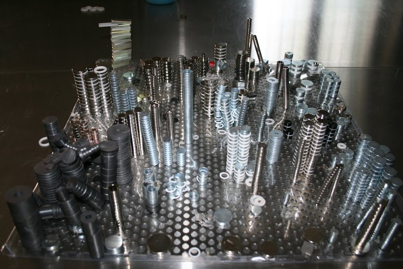
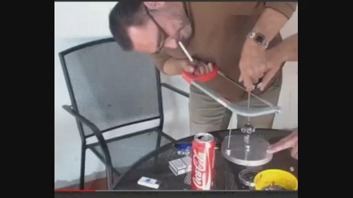
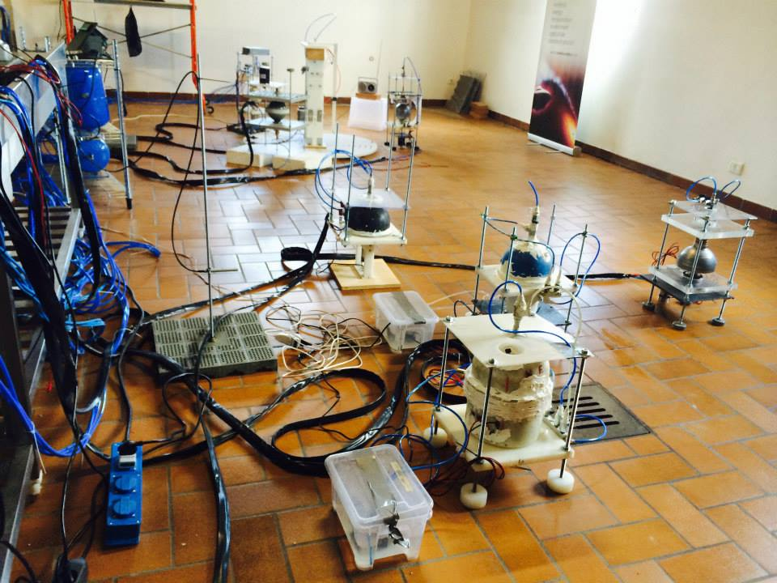
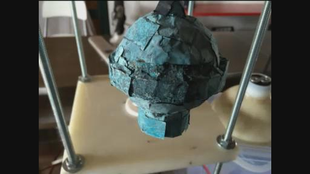
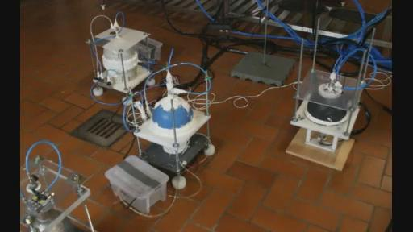
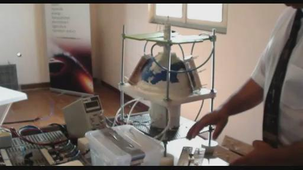

ITEEDU
2014-06-26太空学院第十六次教学
>创建时间：2014-6-28
21:06 修改时间：2014-7-6
21:00
视频下载：http://pan.baidu.com/s/1hGhyQ VAO提供
在线观看：>http://www.livestream.com/kesheworkshop/video?clipId=pla_20534861-b8e5-4dab-a1ce-4597d86e88e4
（欢迎学习爱好者传阅，若转载请注明文本来源不要断章取义，尊重你所看到信息的完整性）
口译：PLANT_LOVER
录音：PLANT_LOVER
打字：KESHE_HUMAN，超前科技
复制：KESHE_HUMAN
统合：KESHE_HUMAN
00:00:00开始
RICK：现在开始第16次教学，我们有一些太空学院的学员和凯史基金会的凯史先生，现在我们开始联线到太空学院，看看他们现在最新情况如何。可能会有一些关于之前上个星期去托斯卡纳的事情的描述。还有关于在未来一周关于那些世界领导人会面的事情，这次会议在6月30日。所以我们可能会有很多事情今天可以听到，我现在把麦克交给他们，让他们现在开始，然后看看情况怎么样了。
ELIAY：大家好，向你们问好。我是ELIYA，感谢你们大家的支持，对于邀请梵蒂冈的这次活动。同时感谢保加利亚国家人民对这个事件的支持，还有苏菲亚，我对你们特别感到自豪。这个工作确实是非常艰苦的，我们去了梵蒂冈。为了地球全世界人类为我们星球的幸福请求和平。我们的文明要跟着一个革命性的进展来发展，对我来说这一天是很不寻常的一天，情绪也比较激动。凯史先生走进了梵蒂冈教皇的方形建筑物里去把信件交给了教皇。我们在外面等待我们非常激动，我们给周围人很多的礼品。突然开始了一件非常有趣的事情就是，当我们进到广场的时候天气非常好特别晴朗，当凯史先生走进了教堂里面的时候，开始下上了雷暴雨，非常巨量的雨降落了下来。所以好多人就在广场到我们这里来了，问我们你们在做什么？所以就变成了很多很多人在那边等着教皇从凯史先生手里接过信件。这就像是宇宙给了我们一个巨大的礼物。使得我们有这种巨大的能量可以团结一切人来实现世界和平。我不知道该怎么样表达，我当时确实是非常的激动。当凯史先生走出来的时候，我们感到非常高兴，一切都很顺利正常，我们向凯史先生表示祝贺。然后我们就想从这一天开始我们的世界文明就会向着既定的方向就会非常顺利的安全的进行下去。这就是我的感觉。你们大家谁有什么问题要问吗？
YVAN：感谢ELIYA。
ELIAY：谢谢，有什么问题吗？
VINCE：有什么人要问问题吗？
YVAN：有人问你们在做什么吗？因为外面不是下大雨大家都围着你们来避雨，没有人来问你们吗？他们是不是感到很惊奇呢？
ELIYA：是的，他们是问我们了。因为我们在保加利亚就做了一个行动榜样，来告诉人们一个能够产生变化的的例子：我们就在那了手牵手在一起站成了一排。人就问你们在这里面干什么，所以我们包括知识寻求者们就开始向他们解释我们在做什么，为什么我们在这里。我们就给他们发一些小的信：关于什么是和平，什么是丑恶的。我们作为人类是什么意义，有趣的是他们有一些人不想要这个东西，因为就是他们害怕不知道这个是什么。但有一些人就拿了这个信就说谢谢你们。然后就开始问他们什么是凯史基金会，然后现在在做什么。为什么我们做这些。这个是非常有意思的。一开始只是我们几个人在这里，然后广场上的人就都过来了。你们能够想象么，那就发生在那里。所以我们就特别特别激动，觉得特别有力量。
YVAN：有多少人在那里呢？大概来说的话。
ELIYA：我没太听懂你的问题。
YVAN：我们到那里时候，有大概多少人到这里来呢？
ELIYA：有非常多的人。因为有很多人从LIVESTREAM展示的照片上看。这个照片是事情刚开始的时候，当凯史走进教堂里面的时候，然后所有在广场上的人就都过来了。都到这个下面，因为这里上面都有棚顶，现场大概有2-3千人。
YVAN：那么从梵蒂冈那边有什么消息吗？
ELIYA：这个广场有好多人从世界各地来的人，都说着不同的语言。所有人都用一种语言来问他们，我们当时非常幸运，因为我们大多数就是从各个国家来的，所以我们就用好几种语言分别向他们回答问题，还有一些是母语是英语，还有西班牙语，意大利语等等。所以印象非常深刻，就是为什么我们这些不同语言的人会站到一起来等待教皇来接受信件。所以有一些人就在等待教皇，请求和平。对他们来说就觉得特别的奇怪，然后我们就和他们说，你们也可以要求和平的。教皇是为我们大家工作的，而不是说只是为某个个别人来服务的。他们就觉得印象特别深，那些和他们一样的人会跟他们在这里要求和平要求教皇为了服务人类，是的。
YVAN：谢谢。
ELIYA：即使大家没理解那种想法让世界的宗教领导人，不明白他们是该为我们工作，这些人是应该为人类服务的。他们不是做为某些人的领导。这些大众把他们想成了一种标志，这是不正确的，因为他们是为我们工作的，他们必须要为我们人类来服务，不是我们大家都归他们这些领导人为他们而服务的。所以他们好像不知道这个，所以我们开始跟他们讲跟他们解释说，这些领导人应该是为我们大家工作的。我们是可以要求为了我们的和平来要求他们的。这个理念是非常变革和革命性的，他们就似乎对此很奇怪。他们就停下来开始问问题，问了很多的问题。
YVAN：是的，因为我们以前也是想为了这些教皇领导人服务的，觉得他们是国王是王。所以说我们一些人就保持着共同的想法。我们就组成了一个集体。
ELIYA：所以呢我的理解就是，我们所有人类的集体意识就开始吸引其他的人，然后我们就会像一个实体一样，这个实体会一点点的大家都会向我们靠拢过来，我们不是去走出去要求他们。不！而是他们靠拢我们向我们问问题，所以我们就是在那里吸引了他们。你们大家明白了我的意思吗？
YVAN：是的，我明白了。
ELIYA：我们的意识，我们的情感就是在吸引大家。吸引他们过来就问我们你们为什么到这里来站在这里，举行着什么，你们能明白吗？
这个让人特别激动，因为这种合一的，就是所有人的灵魂合而为一。
YVAN：这很让人惊奇。
ELIAY：是的，确实是很神奇的。所以特别激动的就是我们所有人都在桌子周围。所以可以跟你们解释那是什么样的感受。
我们大家都想的一起分享同样的东西，同样的想法。就像原子核吸引电子到我们这里来。他们都加入了进来，后来我们这里就聚集了特别特别多的人。
YVAN：觉得我们在为那些领导服务，实际上这些领导应该是为我们而服务，实际上我们每个人都应该为所有人服务。这些人到梵蒂冈等于去拜教皇，他们将这个教皇高高的看在上，从来不会想到可以要求这个教皇什么，来改变我们整个的世界。所以这应该是我们大家都应该改变的，因为我们全世界都要做这种意识上的改变。
不管是对教皇还是从所有人。大家都要同等的来改变。
VINCE：好多人就会认为说我只是一个人，他们就不会明白我们所有人实际上是一个人。每一个人都是每一个人，然后加起来是一个整体。
ELIYA：是的，我们只是1的集合体，我们在一起是一。我们就是1，所有人必须要明白这一点。所以这就是我们为什么向人们解释改变他们的看法。他们聚集在这里面就停止想他们也是重要的人，他们只认为只有领导才重要，并不是这样，我们所有人都很重要。领导必须为我们大家服务。这就是另外一个看问题的方向，所以很多人从来都没有过这个想法。很有限的去看到这一点，因为这些人来自世界各地，所以他们都认为他们不重要，他们只是来访问一下梵蒂冈，好像在拜访上帝那样。并不如此！上帝在我们每个人的内心中。我们也都是上帝。我们所有的人都是弥赛亚。都是知识的传播者，所以我们每一个人都是重要的，我们每个人都是1，大家明白了吗？我们开始传播这项技术，然后我们共享这些知识，地球上有七十亿的人开始工作作为1，这个就是去梵蒂冈的目的，至少是我的目的我只是代表我自己，我去梵蒂冈去支持凯史先生我只代表我自己。
因为我们所有人类我们只是1，我们是一体的。不管我们在哪里住，正在从事什么。所以我经历了所有路程到达了梵蒂冈。我开了28个小时的车没有停止，只是因为我就想让人类明白我们是1，我们的地球是我们的地球，并不是说属于这些领导者的，它是我们的母亲我们的家。这非常重要。
VINCE：谢谢你,ELIYA。
YVAN：谢谢ELIYA。
ELIYA:不客气。我太爱你们了。我将我的心意献给你们，麦克风交给其他知识寻求者。谢谢大家，感谢你们的支持。当我去梵蒂冈的时候能感到你们心里对我的支持。所以说我从内心里感谢你们，感谢大家。
RICK：非常感谢ELIYA传播的这个信息。
VINCE：令人鼓舞的信息。
RICK：对，是这样的。
MARKO：大家好，我们上星期一直在路上开车了。我们到了意大利的南方，然后又到了意大利中部的托斯卡纳，然后是在那里有一个会议。会议的组织者是Associazione
SaraS（意大利非营利性公益机构）社团协会，他们做了一个很好的工作。他们就对这次会议做了很多的努力。我想感谢他们，尤其对很多在后台工作的人员。他们给了这个事情大力的支持。所以我也有在LIVESTREAM上转发了视频。你们可以去看这个来自各种人的所有的讲座，还有YOUTUBE上面，凯史先生是其中的一位演讲者。还有维纳斯计划（又名金星计划），还有朱利安尼协会，还有SaraS协会是主持者。他们也有人做了一个演讲。他们试图就为我们社会做最大的努力，我认为他们做的很不错。他们试图把所有的不同的组织联合起来。所以为什么就是这个维纳斯项目，还有SARAS，还有凯史基金会，还有朱利安尼基金会，所以我们大家一起。这个会议还有另外一个组织，我原来不知道他们的名字。但是显然那个组织是由政府建立的，最后一天他们压根就没有在，实际上只有一位先生在那里，最后一天他也没有到这个桌子上来。所以邀请他们显然是不对的。所以我希望你们也到YOUTUBE上去听那些讲座，尤其是凯史先生的讲座。那是一段非常重要的讲话。（会议演讲翻译：http://note.youdao.com/share/?id=632fef2757ad1e1e32389436ed740dd4&type=note）我们可以从中学到很多。所以大部分时间我们是。（被插话）
YVAN：你现在有YOUTUBE的链接吗？
MARKO：我们有一个连接，我们也试图把他们放在LIVESTREAM上面。事实上有好多连接。所以我们确实上个星期是离开了这里。我们星期二回到了太空学院，然后所有的东西好像还在工作着，反应器也比较稳定。所以我们没有任何东西比如坏了这种情况。我们就开始了我们的日常工作，昨天还有前天我们开始了另外一个新的组合接了起来。现在我们是必须把它们2个组合放在相互挨近的位置上。所以我们试图在学习这个形态，它的特点，然后它们不同等离子体之间的相互作用，这就是我们目前在做的事情。我要把麦克交给下一位。
JOHN：我现在已经把链接发出去了，就是有关托斯卡纳会议的链接。有几个录音录制的录像。我想说它们是很完美的，有一个还比较好比较重要，我们去听一下看看凯史讲的是什么。另外还有意大利语的讲座，还有加了一些照片，RICK把这些照片的链接放上去了。MARKO刚才谈了一下我们在实验室时候的事情，有一些不同的事情。如果你看照片的话，还有照片78-53还有87-34这张,这个照片是特殊的关于ARMEN的磁铁。

还有一个连接，RICK你能够把这个链接发一下吗？这样大家都可以看到我在说什么。
RICK：是的，我正在把他们弄起来，JOHN，可能要花一点时间。我在连接另外一台电脑。
JOHN：对不起，本来想发一下照片的。但是我的计算机有问题。真是有点背运啊(笑)等一下我可以说了。是这个链接，
RICK：是不同的链接吗？
JOHN：是来自于实验室的图片。
RICK：你这次和上次发的是不是和之前不一样的？所以我是不是应该把上次而不是大上次的放在这里？
JOHN：没关系，我还会再发的。
RICK：放哪里发呢？
JOHN：放到SKYPE上。
RICK：问题你的SKYPE大家看不到，我必须要放在LIVESTREAM上大家才能够看到的。我现在在连接另外一个计算机，所以要等一会儿。在这里做的并不容易。
JOHN：如果你看这照片。
RICK：等待。你是说第一个还是第二个？
JOHN：第二个链接。
RICK：你记得我刚才跟你说的照片吗？我觉得这些是JOHN要说的，78-34，JOHN，另外一个是什么？78-32吗？
JOHN：是78-53。这个就是，收集起来的磁铁，就是凯史曾经提到的，因为ARMEN在问问题，问了很多有关磁铁的问题。所以这些就是磁铁，现在我们用了一些，在SKYPE上面有链接，你们只要一点就可以了。
RICK：没人能够看见SKYPE，JOHN。只有3个人能够看见，所以我必须要放到LIVESTREAM和GOTOMEETING上让大家看到。
RICK：我已经把78-33放上去了。
JOHN：事实上有一张照片是78-80，就是我们所有人都在会议中心。在会议的最后。
RICK：我想就是ELIYA发上去的那些吧。好的。我们已经把链接发到了LIVESTREAM上了。你们可以看一下了。JOHN。
JOHN：你们大家能够看到了，就是ARMEN收集的那些磁铁。
RICK：那是MP4格式的视频文件吗？
JOHN：那是一段视频。
RICK：好的，现在视频上就是ARMEN正在用锯在错反应器，在用磁铁的结构，

我们在屏幕上看到了这个视频。视频上面ARMEN锯掉了一段柱。ARMEN在工作，是那些磁铁吗？能跟我们讲一讲吗？我没有播放声音所以你能不能够说一下呢？
ARMEN：好的。
RICK：HI，ARMEN，你好吗？
ARMEN：JOHN刚才说了点什么，其实这个很简单，来显示一下这些磁铁是如何作用的。跟大家我只想说关于一件事。我们去罗马了。这是一个巨大的阶段，对于我们所有人而言。你们大家看到的这个技术是第二个部分。你们知道，因为作为我们所有的人类我们内心里面。我们不能够克服这些杀戮，我们不能克服暴力。即使是对这些用这些技术，我们仍然不能够纠正我们。所以我们所做的向前迈出的巨大一步是就是去行动并且去传递一件非常简单的事情就是：所有我们人类必须明白，这个必须有一天我们要彻底结束这样（杀戮）。这一天我认为已经过去了，用这些磁场你可以展示场是如何运动的。所以用这些磁铁你可以展示场体是如何运动的，因为所有的东西都是磁场。比如说也可能是等离子体，也可能是物质。因为物质的不同，等离子体不同。所有在这张照片里面想给公众做出的展示的，是就来展示场体是如何工作和作用的，就是这样。谢谢！
JOHN：谢谢。
YVAN：早上好。这是YVAN。
VINCE：你好,YVAN。对不起，我刚才听到ARMEN的话了，可以能够听出这个小伙子激动的情感。我只是想让他知道我们都是一样的。我们都开始明白那个情况，那真的是一个巨大的情感上的情况发生了。在不同的层面下我能理解在发生着什么。我只是想让他明白至少我自己是非常支持他的。希望他继续努力，因为我也在做相同的事情。我可以向他转达。
YVAN：我把麦克给ARMEN。
ARMEN：谢谢你VINCE。
YVAN：好的，有2个事情在我头脑里冒了出来，当ELIYA在讲话的时候她提到了那场雨，当凯史先生走进教堂大楼的时候，当时就有了场特别巨大的雷雨，当凯史先生交完了信出来之后雷雨就停了。这个提醒我，当你看YOUTUBE的时候他说就在2年前当时前任教皇在圣彼得广场辞职的时候是一样的发生闪电的情况。这个确实是在那里发生着什么事情。当我们在那里的时候。2天以后当我们去托斯卡纳的时候，他们有个组织者叫SARAS，我试图在找这个SARAS是什么意思，代表着什么。他们有一个网站叫做http://www.associazionesaras.it/所以你可以看到在他们的网站上你可以看到会议的情况。所以好多演讲都在那里边都贴出来了。（SaraSFB账号https://www.facebook.com/AssSaraS?ref=stream）
VINCE：HI，YVAN。我正想要问演讲，我们在YOUTUBE上，我们正好刚看到了最后，包括最后那一幕。但是我没有看到在22号的演讲，凯史先生和其他人的谈话。你知道他们的。我们大家会贴出来呢？还是这个事情他们会负责公布出来呢？
YVAN：我昨天看他们的网站，但是我还是没有发现。我只发现了他们的讲座，还有维纳斯计划的讲座，我找不到凯史的讲座，还有圆桌谈话也没有。他们说想把它做成录像。凯史说他们可能晚些时候再发布。
VINCE：是不是还有一个好像是有关于健康方面的讲座？当我们在第15次教学的时候说到的。
YVAN：必须要重复一下这个问题，因为刚才有些延迟。
VINCE：在第15次太空学院网络教学时候，凯史先生要我们听有一个关于健康方面的部分，在会议上会讲。那么这个讲座进行了吗？
（KESHE背景说他们取消了）
YVAN：这个一会儿凯史先生会讲到。
VINCE：好的。没问题。
YVAN：我们回到实验室之后，就像MARKO说的，我们把第二个星体组合建立了起来。有一个已经转起来了。那4个圆球形的已经运行了，所以我们现在把另外4个半球形的反应器之间连了起来。是ARMEN的主意，4个半球形的就代表女性，很像4个女士穿着裙子在跳舞。然后另外一边是男性的。
我们现在就开始观察它们试图发现它们之间是否有什么相互作用，一件有意思的事情就是我们用手机来测量场体在反应器周围的，首先是我的反应器。在一面的场体的数值是350，另外一面的数值是在另外一边有180度相反的地方的场体数值是250。刚才是350，这边是250，所以减少了30%，
VINCE：哪一个（00：41：18一句没听清）。YVAN。
YVAN：场体更弱的一面是在面对着另外一个星体组合的方向上的一面。凯史先生说当数值少的话说明在包含着而不是在进行释放，在外面你释放的更多，所以得到的测量数值就会更高。事实上，有可能是另外一面的反应器在增加等离子体。因为不是在特别中心的，因为反应器里面的等离子体可能是偏到了一边可能不是在中心。可能是因为沾涂层的时候一面和另外一面不对称，所以可能会往另外一面偏。
VINCE:我有另外一个问题。就是你不是又有另外一个新的星体组合的造型吗？那么这个等离子体是怎么来的呢？是从这边传过去的还是你按照同样的方法制造的呢，还是说有不同的气体，就是说高一点或者低一点的场强呢？比之原来的那个。
YVAN：事实上发生的就是。2个星期前，我把我的反应器拿出了这个星体组合。因为它逐渐变得越来越强，所以我们把它这个放在了一边，断开了连接。把它打开了真空。就是我们把它拿到一遍然后打开在一个大气压下，然后我们又重新抽真空，然后又做了这些事情，所以就等于一点都没有改变强度。所以数值就一直在300-400微特斯拉左右。
VINCE：你这个反应器的里面是用纳米涂层的吗？
YVAN：是的。现在好像已经有1个月了。有1个反应器放在那1个月也没有动了，然后就就一点点失去它的真空度了。所以基本上它的场体没有变化，所以凯史先生决定把它放在新的星体组合的中心，因为它有一个很强的等离子体。很明显，实际上它有一个等离子体，那里以后，即使我们离开了那个真空也不会改变的。那就是凯史先生给我们解释的。即使你把反应器的壳子给砸开，等离子体还是会在那里。它最后就会形成它自己的一个外壳，就像太阳一样。就是在太阳的外面就像我们看到的那样，不是有外壳撞着等离子体，而是等离子体形成了外壳装着自己，所以这实现了相同的条件对于地球。
VINCE：所以它自己本来已经是孪生体了，把它从第一个移动到第二个星体组合里面。那么是等离子体会在反应器里面变化。
YVAN：我们觉得说的就是那个极性的变化因为我们在反应器最上方应该是最强的场，在下面是最弱的，现在是相反的情况。底部强上面弱，为什么会这样以前也发生过。
VINCE：对不起打扰，但是你是在这个星体造型里面，如果你把反应器拿出去。你就不会单独的看到每一个，你会看到整个的星体组合拿到里面去可能是任何一个极性，我是这么想的。
YVAN：因为在组合里面，另外三个里面没有等离子体。所以我们昨天就加入了，然后我们把它们都给抽真空。然后我们给它们，因为其中一个是没有纳米涂层的，所以过程会是很慢的。所以我们给那个反应器先给它多一些时间，所以我们昨天晚上做的。所以今天我们可以做其他的两个。这就是现在的情况。我把麦克风交给凯史先生。
（第一次翻译截止00：46：00）
VINCE:好的，谢谢YVAN。
RICK：谢谢YVAN。
KESHE：大家好，我们现在回到了我们知识寻求者的所在地了。上次我们谈话在罗马的时候，因为旅馆内部接受的信号并不好，所以我们是在车里面进行。所以让这些知识寻求者来传授知识，有几个问题我需要解释一下。我们去梵蒂冈不是为了对他的地位造成什么危害，我们是想把所有的宗教联合起来。我们把邀请他们到30号参加的信件交给了教皇。我们在过去2天收到了一些简短的消息。因为时间短暂的关系，他们要求把会议往后推迟这样他们就可以做决定了。所以目前我们把这个时间定在星期一，7月14日。所以我们现在就把时间更改之后重新发送了邀请函给所有不同的宗教领袖们。所以原来的话只有2周时间太紧了，新的邀请信已经昨晚在德黑兰了。所以我们重新发邀请信估计今天已经都发出去了。所有的邀请信的内容都是很简单的：我们都穿普通人的衣服来，这样就不会有等级的显示，也没有人会去想谁比谁更加的高级。整个的进程，就像我解释的这样是非常直接的。那些文件我昨天打了一些电话给梵蒂冈，我们的电话是直播不需要转接。目前没有收到回话。然后再看看情况怎么样再进一步发展后会公布，所以我们把时间从6月30改到7月14日，这样宗教领袖就可以做决定了。我们邀请了6位世界宗教领袖或者他们的代表。如果他们不接受的话，那么这个过程就不会停止。我们就要把整个结构传递过去，当他们从多元变成唯一的时候。我们并不是为了去建立一个宗教的体系。让大家明白这和平协议是一样的，我们给了世界领导人他们机会，这是一样的路线。我们为宗教领袖们打开了通道，但这次的时间不会太长，所以无论怎么样人类会胜利，以正确的方式。现在对于我们这里很重要的一点就是：我们现在有了ELIYA在这里，她不是全职的在我们这里的，现在她成了我们凯史基金会的母亲的角色，在很多的方面上。就像家里面当这些孩子有了问题的时候，他们跟妈妈抱怨，因为妈妈会给他们解决给他们方案，她变成了妈妈，帮很多人解决了问题。我感谢她为基金会所做的一切。我们现在尽量使她成为一个全职的基金会成员，成为一名知识寻求者，她具有很渊博的知识关于人类，包括物理层面的。这是我们不能忽略的财富。另外一方面我们现在有一个巨大的变化，就是对于我们基金会的位置和处境。就是我们怎么样如何来进行医疗健康方面的工作开展，因为ELIYA现在在这里。所以我们这周讨论可以在这里（太空学院）进行开放。像你们知道的那样，昨天我们就已经开始建立了这个框架，程序已经开始启动，我们开始建立健康中心在MOTO（地名需进一步确认）这个地方。我们已经得到了许可，我们可以在MOTO这个地方建立这种替代性的治疗。这个程序已经开始了，下面的2周，MOTO中心就会面向全世界开放了，作为欧洲的中心。这个作为凯史基金会建立医疗机构已经得到了欧洲的一个主要的保险公司的认可，然后在欧洲作为一个替代性治疗的组织。他们正在查看医学检查所有的治疗程序。所以大概在下个月，你就可以买医疗保险了。买这个保险可以进行凯史基金会的治疗，开始了医疗的程序。昨天我收到了电子邮件，保险公司的律师正在跟他讨论法律方面的事情，看都需要做哪些方面的事情才能被保险公司包括其中。在欧洲法律的范围内，如果保险公司接受了这个医疗程序的话，那么其他就都会跟着跟进了。所以我们希望这个会带来一个巨大的变化。通过保险公司来证明医疗技术是正确的，会被所有医疗界愿意来研究，他们就会去推荐。他们研究了所以他们对保险公司推荐，他们已经采用了。
这样就是以一个比较积极的方法去做这个事情。所以，现在就是我们基金会所有医疗方面的程序都处于合法的状态下。在欧洲一个国家的话，其他的地方也是可以接受的了，（52:46听不清）我们会过几天宣布这个事情，当所有一切都在MOTO进行的时候。他们会操作这个事情，但我们会去进行组织开放医疗中心。这是我们的第一个新生儿的诞生，所有的事情我们都要学习着来，对于所有的问题，我们有一些很好的经验在比利时的尼诺刚，在那里感谢YVAN在那边开的医疗中心。一直都是给了我们强大的支持，有2个医生都在这里面，他们和我们一起去了托斯卡纳。我们基金会很敬重这对夫妇。我们不会忘记别人，但是我们建立了做事情的方式，我们会继续做。有很多问题我意识到了，但是我尝试把它们放在后边，因为时间比较紧迫。ELIYA跟我们差不多有1个星期的时间，我们进行了一些讨论关于什么将要到来。她也有很多问题，就像我所说的那样，很多人就会跟妈妈抱怨。然后妈妈会跟爸爸抱怨，然后说爸爸应该找到解决方案来回答。然后有很多问题。因为我们来自西班牙的知识寻求者JORGE的行为，这个行为由JORGE个人做出的。我们有一个结构就就是我们一直在做的，大家来到基金会不期望我们有的话，我们就不会在那里。知识寻求者们付学费来这里，他们必须要遵守录入合格的条件，就像所有其他的教学的学院一样，你交学费申请那么我们接受的话，也是要按照条件的。你必须要付你的学费，如果你不能支付的话，没有这个条件的话你不能支持你自己，那么你也就不够再在基金会继续下去了。知识寻求者他们自己是应该付这个学费，这是他们自己的责任，不是说这是基金会的责任，所以这就JORGE就离开的其中一个原因。实际上JORGE跟基金会没有任何矛盾。我对就我们这方面来讲就是你要尽的责任。你的条件要符合，我们不会半路改变，条件就是条件，约定就是约定。很多人在那里说我们好像有问题，我们没有问题，知识寻求者他一个学期之后就离开了只是因为资金上的问题。之后这个事情就会有ELIYA负责这方面的事情，就是健康中心，合适的时候就会宣布。这是太空学院成为大学的一个项目部分。这是基金会的责任，我们会争取在10月份开始。关于大学的事情，一切程序都在进行之中。我们见过了政府官员讨论这个事情。有着这些政治方面，还有教育方面的意大利的成员，关于对于像我们这样的机构的考虑。他们到了这里在另外一次机会当中我们举行了一次会议。现在就在讨论我们应该怎么样在做这个事情，或许作为一个？（00:56:25某词）的学院的一个部分，就是作为意大利的教育或者大学机构的部分或者结构。但是这个就是需要在下面的几周或者几个月之内的事情。我们还要看来怎么做，因为他们觉得这个科技是一个巨大的突破。他们就可能希望这项技术在意大利的结构里面。这就是我们现在的变化：我们在比利时的时候必须要保持沉默，而且从一个地方到另外一个地方。这就是我们在意大利之后有了很大的变化。我们展示了我们在对个国家所产生的整体的影响。在这里有了1年半的时间，然后政府的不同层面正在意识到这项技术，他们在不同的方面上对这个技术进行了测试。就像我们把好多技术都给了意大利的公司一样。他们就认识到了对我们工作比较重视。因为这些公司他们自己按照他们自己的方式进行着实验，并且发展了，我对于他们的这种发展进行了支持。有一些事情是特别重要需要我们明白的是：就是我们太空学院和凯史基金会是在一个地方。
但是作为基金会这两个功能机构现在是完全分离开的。我曾经把所有事情都聚在一起让这些知识寻求者们参与到各方面的学习进程中，然后续写怎么样来对基金会进行运作，但是很显然的这个效果并不好，这个速度太快了。所以现在我们把2个完全分开，一个是作为基金会的组织机构，一个是太空学院作为研究学院。上个星期的时候我们完全给分开了。我们的顾问建议我们，这是可以采取的最好方式。因为不然的话外界会有好多的困惑，就是对于我们到了什么样一个阶段。太空学院作为一个学习的场所而存在。如果谁可以能够做运行基金会方面的工作的话，我们再把他给提上去。然后这样你们可能会发现，某些人工作在2个地方，有的人只是在一个地方或者在其他地方工作。还有其他几个比较重要的事情可能还要通知大家。在上个星在SARAS托斯卡纳的会议上，我碰到了一位科学方面的天才。关于人类科学方面的。这位先生他花了很多的时间，他认为比较简单的就是发明了一个系统可以测量地震。可能在6-24小时之前就可以用他的系统可以测量出来。他曾经在2009年证明了它的正确性。但他还承受着相同的压力，和我们所处于的级别所遭遇的情景一样。你们可以看到在第二天这位先生作了一个报告，他的女儿就坐在我们凯史基金会知识寻求者的旁边，我们被安排在了第一排。因为我们是要作报告的。他的女儿正好就坐在我的旁边，然后我跟她说你的父亲是一位天才，因为他就以核物理研究者的身份解释了，如何来探测地震和雷达是怎么样相互关系的。然后发展了这项技术，可以测试这种放射性。在发生地震的6-20小时之前，这给我们足够的时间警告来拯救生命根据他所做的和紧急通告的。甚至因此他们想要让他保持沉默，他说有2-300人就听了他的信息，在意大利的一次重要地震到来之前的那天晚上就搬到了花园里。台湾已经接受了他的这套系统。他也遇到了一些问题之后他被控告逮捕了，在会议中他给了我们一个演讲。题目是。（背景有人对KS说话）不是。不是朱利安尼。朱利安尼是组织者。我们公布了他的名字，他的名字是应该在这个节目表上的。他在会议之后跟大家一起讨论，就是这个系统是如何工作的。然后他给我们解释怎么样工作，我们一下子就从科学的意义上，我作为一个核物理专家一下子就意识到他已经触及到了一个主要的人类面临的主要问题就是关于地震（01：01：24某句听不清）能产生海啸，并且产生数十万次的（01:01:28某词）在固体环境下的移动。所以从科学角度来明白他所解释的，这个情况就和我们基金会所在地的你们称之为星体组合的反应器系统联系了起来。但是你们看到的是，它就跟地球是极其相似的。我们突然想到我们可以立刻在他演讲之后，就在午餐那时，MARKO，JOHN，YVAN我们四个人。我记得当时我们和这位绅士说我们可以复制这种地球地震的条件。然后帮助他以具体的物理形态来展示地震的条件环境和地震时雷达的峰值：我们可以调整1-2个反应器的内核。就好像创造出地球的地壳，就是我们的大陆。然后就可以向他展示地震可以发生在哪里并且可以有很多的进展。但像我们在当时谈话中展示出的矮墩墙样子的装置（凯史先生在演讲中展示的小装置）我们在一起讨论了我们的基金会是做什么的。因为这是以非常好的方式来服务人类，是一个很好的方面可以拯救百万人的生命。地震曾经导致这个星球上数百万人的死亡。这个人就发现了这个方法而且证明了很是正确的。所以在这方面的工作上很可能我们会和他有第一次的合作。我们会1-2周后和他建立起联系，
然后我们可以进行测试。就是说不仅是从我们的反应器这方面为了验证他的理论。而是作为一个对于这个星球上地震过程的完全独立的确认。整个事情的美妙之处就是：我们下几周会增加一些额外的反应器。这些是从未被测试过，这些是甘斯反应器，JOHN在比利时加工然后带过来的，现在已经在开始制造了。我们设置了2套系统，有一个是特别小的反应器,我想大概是7厘米的直径，那那个7厘米的反应器中我们会在里面注射进甘斯。ARMEN的就有拉手，这是个奇怪的设置，（KS我不喜欢这个它会分散注意力。）ARMEN做了一个透明的球体，是几个星期以前做的用了装甘斯的。我们可以看清楚里面甘斯的信息。就可以看到里面甘斯形成不同的形态的样子。可以看到甘斯材料在里面的运动，在球里面动的情况。现在见到了这位绅士，他带回来了好多东西，我们事实上可以复制液体状态下的条件。用不同的甘斯，不同密度的甘斯。所以我们就用了ARMEN的这个透明的球体在之前就看到了我们的很多东西，包括物质和甘斯的分离。我们还测试了另外的2个JOHN带来的反应器。整个的结构会教会给我们很多的东西。然后现在看到那2个我们之前启动的系统，现在我们有了整个6-7个反应器反应器的结构在一起，在我们没有把它们分开的时候。现在我们有2个造型组合，一组是完全是球状的反应器，另外一组完全是半球的。可能你们会知道的就是，半球的会更加的稳定。它们在极点的变化上它们会更稳定一点。但是我们还是看到了极的变化在半球的反应器当中。当我们把一个反应器从中心移开的时候，我就看到有些人说的就是因为极点的改变是单独的，并且它是孪生星体和孪生体的结构，这是准确无误的。YVAN的反应器极性的变化，就是我们或多或少能够看到的变化，这也是我们经常说到的。当一个反应器它的极性变化的时候（01:06:50某词WOMEN？）也会旋转。爱因斯坦把它称为不可改变的事情是因为他并不理解这个事情。但是现在我们有了一个系统可以在实际的物理展示出这一点，YVAN的反应器的北极正在和南极产生交互作用，然后南极再和北极相互作用。这个半球形的极性的变化是我们10年的研究中第一次看到。所以这个很可能是因为这个球体是经过纳米涂层处理的关系，就是YVAN的这个反应器。所以纳米涂层的磁场中就产生了环境中的引力场，并且充满了整个环境。使得在反应器中的等离子体自己可以独立的行走,这就是为什么它有极性的变化，回应其他的反应器,所以我现在整夜想的是我们要不间断的测量中心反应器和4个反应器，看看它们极性的变化。来看是否已过转换后另外的随着转换，还是说其他的仍然是保持着同样的状态。但是不同的是，1组是半球的一个是整个球的，我想半球的静态状态会检测出极点的位置，这个新系统的发展是一个新的理解，就是半球中的极性的变化，等于是为我打开了一个新的研究大门，因为我开始对它进行工作，我觉得我们会在这个方面上看到很有趣的发展。JOHN解释了这个反应器，尤其是伊万的反应器，我们看到这种从等离子体到物质的释放的转换，整个系统是密封的，但是我们看到了在系统中真空度在逐步降低，因为我们已经对它进行过一个很高真空度的处理了。当我们放着它的时候，这些星体就会回来再次逐渐地释放气体,我推测这起气体就是我们通过手机（软件）抓取到的，氢气的起源就是等离子体的转换，我可以解释等离子体是如何改变转换到物质的，这个就像我们看到的在地球的大气层，在这个反应器结构当中某处的位置创造了，我就可以初步的知道这一点。反应器就像我自己的孩子，因为每一个都是由我创造的。
（01:09:49某句 BROUGHT
IN？）我可以科学的解释为什么我们能看到甘斯等离子体的转换和磁引力场转化为物质，如果这个现象一直继续的话，我们要看是否所有的等离子体都变成物质，我昨天和MARKO解释了这个过程，这是相同的过程。就和来自于氧化铜纳米涂层中的甘斯材料的逆转是一样的。你制造了环境，在这个环境中你在原子层当中的分子结构转化成了物质，然后你制造另外一个于原来状态相似的环境，它就会变成了它的等离子体变成它的甘斯，然后如果你能直接使得甘斯变成等离子体状态，现在你正在制造同样的环境，就像在盐水里制造GANS的情况一样，通过我们制造的纳米涂层。实际上我们在做同样的过程，情况没有改变，只是在用不同的媒介。现在这个过程已经更深入的进行了发展，从长远的角度看，当我们进行了更多的各种的实验的时候，我们会更开放的传授给大家更多关于这项科技的其他方面，然后你可以看到他们的相似性，在一个反应器中或在盐水中以等离子体的状态把物质材料变成GANS
。
VINCE：凯史先生，对不起。我不知道是否有人听到过我当时被打断了，当你说物质转换成等离子体过程的时候，对不起，是回到GANS状态，能否请你再说一次呢？
我怀疑没被录制下来。
KESHE：好的，是因为核心里的纳米涂层制造了一个环境，在其中等离子体的表现就跟氧化铜在盐水里做的是一样的，在这个转化中，你用纳米涂层把这个转化为等离子体，我们叫GANS状态的氧化铜，CO2或者无论什么其他的东西，然后在这些核心里面，就像伊万的反应器创造了一个位置（条件），在那个位置上由于，我们在这个反应器核心上所涂层的纳米材料的磁场层，由YVAN在内部和外部开出了凹槽，在旋转状态下进入其中的。就是我们这个当造反应器的时候帖在里面的这个，它们产生了相同的条件，但是是倒过来的，现在你制造了等离子体，因为相同的材料，然后把反应器做成星形的造型，双星体造型。在反应器内核里的等离子体就是然后就向一个方向有移动，被拉拽到这个核心的一个方向上。所以事实上，这样你在另外一边又创造了另外一个条件，如果等离子体之间通常的间隙，就是反应器壁曾经是厘米左右，现在一边反应器的是1.5厘米。另外一组球体是2.53厘米的是用来观察另外的一个星体组合。所以这个在壁上的等离子体的间隙的扩展，就能够允许等离子体能够转化为物质，昨天我和MARKO解释，这就是正在发生的。等离子体的磁引力场离开了太阳，等它完成了正确的条件，在地球附近时如果条件合适的话，等离子体它们就会转换为氮气和其它材料，但是如果要是不是和地球接触，它就会直接到其他星球上，如果要是什么都没碰到其他星体的话，
就直接变成了我们太阳系的最外层的部分的防护盾层，所以现在我们创建了条件，在其中我们转换了等离子体由于等离子体的扩展，然后给了它几厘米的（
01:01:49某词
）空间，就可以把等离子体转换成为物质环境，这个环境的产生在反应器的某些地方，由于可能有粘性的东西问题，或高级硅胶沾的地方，就像YVAN解释的在每一个反应器的顶端设置的那样。

创造了类似地球的环境把等离子体转换成物质，我们就是看见这个现象当在核心中释放了气体的时候。如果它是一个假设的话。（被VINCE打断）
VINCE：这个只是发生在动态反应器里吗？
KESHE：这个是第一次在伊万的反应器里发现的，我们没有漏气，系统是完全封闭的。稍等一会儿，让我写一些东西。这样的话我可以。
VINCE：对不起，我的意思就是说，拿纳米涂层处理的铜金属片就是像包裹上去的那一片片的，然后你在它上面都扩展（SPERAD）开了甘斯。
KESHE：不是的，不是的。不是扩展上去，这些涂层我们是胶状粘合沾上的，我们把GANS放在里面已经几周了。我们让它那边转化成了等离子体，纳米层的磁场能够使等离子体被限制在里面，有些情况对大多数人来说一直感到困惑无解的是，这个核心可以保持住如何多的等离子体以及如何制作出来的，这个反应器实际上是把在之前放在里面的甘斯层中所有的磁引力场都拿走了。
VINCE：你是说在动态反应器中的等离子体吗？你是否说反应是纳米涂层之间的相互作用还有和中心的盘的作用？
是不是因为在壁上的纳米涂层和中间的相互的作用？
KESHE：是的，事实上我们创造了等离子体，这个等离子体在反应器当中保持着。等离子体不是坐在那而是动态的。即使我们没看到我们的电机转，等离子体它自己也是在运行的。即使就像我们说的，谁看的地球或者太阳有电机在转，但是等离子体是转动的，我们已经在反应器的内部创造了这个条件，但是在那个过程中，我们给它制造了一个新的环境，自从将他放倒了一个新位置后，在第二个星形组合造型的里面的中心，它创造了足够的空间，或者是足够的条件让等离子体转变回物质，每一次，我们让系统运行的时候，我们看到真空一点点的下降了，并不是很大的下降。所以这是第一次我们通过改变了极性来使得情况更加的稳定，第二就是通过改变等离子体的位置而不是通过中心化的方式，但是是移动到另外一侧。有很多东西我试图公开让大家明白这个过程，在实验室中对于那些数据有很多的误解，我曾经谈过关于数字我们之前看到过峰值，我说过了你们就是忽略了掉它，然后很多人还是不明白，我们必须耐心等待来证明和确认，这就不是计算机做了一下就可以看到的那里有个数据错误。
过去的3个星期中已经证明了，通过或多或少的了解那里到底发生了什么，坚持保留整个系统继续发展直到我们找到为什么会有峰值的原因。我们的电机从4.4、
4.5、4.3毫安，一直降低到了0.9。我曾经被告知过说“我不明白为什么会这样，我能完全明白的时候就是我是正确的并且那么做的。然后使得浮动停止了，提升了25%，75%，一直提升到了全部的能源（TOTAL
POWER），就意味着当你得到了峰值的时候一定不要忽略，如果看到了一些事情足够多的时候，这个峰值就意味着危险。当你有浮动，当你有峰值的时候，就不要忽略它！那些忽略它的人会为此付出代价。如果你运行反应器的时候得到了峰值的认为它是错的，如果再表现出峰值话，然后你尝试着忽略它的电脑数据。结论就是福岛事件将会是你要遭遇到的问题，比福岛事情还要更糟糕！因为我昨天和ARMEN解释这个事情：你忽略了它，你在运行反应器，你说是的。你在负责它的发展并且看着它的，你把反应器放在了任何地方，搁置了任何事情，因为你决定了它的电脑（01:20:26某词）因为你的忽略造成的，那么这个城市的败落，那个管理的缺失就是你对那个灵魂的回应！所以任何时候任何人说这只不过是第一次忽略，那么这个第一次就会变成我们的福岛，然后我们就会有更多的灾难和更多坠毁事故。所以你们任何人当运作这个系统的话，你用XX和XX（01:20:48两个词）进行监控，你看到了浮动你一定要停下来解决这个问题！浮动维持着浮动就意味着问题！这个就是我们花了2个星期看的3号核心的问题，（01：21：01-01：21：10一段听不清）现在反应器都稳定了，我们能够开始进行下一个设置了，所以我们开始看到了新的发展，我们在下一个速度里开始看到新的发展。这发展是什么呢？你们叫两个星体组合的造型，现在你就有2个原子了，它们正在相互作用，我们现在就当反应器数量增加时我们可以复制一个原子的造型，这个结构就是原子的结构。凯史基金会此刻是唯一有这个装置的机构，并且伴随着这种扩展，我昨天收到了一个主要的政府的“巨大”邀请就是：给他们制造大量的材料。因为他们开始以非常严肃的方式来看待这件事情了。他们认为我们已经找到了解决方案，我跟他们解释我们必须要合并才可以。换句话，我们必须要能够支持这个研究。那么这是什么意思呢？这意味着现在很快的，我们马上就第一次可以将两个反应器以彼此挨着的方式放到中间的位置了，因为我们就有了足够数量的反应器，然后我们可以复制氦，我们会得到4个反应器和2个中心点。当我们反应器更多的时候，很可能当更多人加入我们的发展的时候，我们就可以实际上追踪原子的结构，通过放足够多的系统在足够多的位置上的时候。科学在了一个新的维度上，我们不需要来猜测电子是什么，电子都做什么，我们现在可以复制改变在这些核心中的参数，很快的我想再未来的1-2年内，我们可以创造出的一个JOHN制作的类似的反应器。我们可以建造一个非常大的非常低成本的反应器。可以补充它们并且控制它们。我们就知道，或者是钚或镭的性质，看那些中心的反应器如何来释放能量，这个就是改变了整个物理的科学和造物。现在MARKO有1-2周在为他的不锈刚反应器进行装载，对整个一圈的3个反应器装入不同的气体不同的组合。
我们现在看效果，我们有了一个17页的数据，关于1个反应器的行为表现，我们就有了参考点，我想知识寻求者在跟大家说我们现在将我们有的两个探测器从星体组合当中拿出去了。
所以每一个探测器都在检测星形组合的环境，不像上个星期只对一个反应器的核心进行检测，
所以就是我们通过该这种设置探测器的方式，至少来看一下要测定在3维场体的轴线上2个核之间的场体的相互作用。这个场体会穿过两个核心之间的场体的方式建立起来。（第二次翻译截止01：24：33）
然后其中一个探测器设置在了星体组合的外部在最初的路径上。所以我们看到了在外部发生了什么。然后看通过这2个探测器的场体发生了什么变化，这实际对知识理解的整个过程
打开了一个的全新的理解过程。非常奇怪的是2个探测器都显示了对垂直方向的推动。这意味着我们现在还不会得到那种起伏变化。但是我们得到的强度变化是向下的。所以这个就显示了我们这个星体组合的造型实际上濒临飞升的状态。我们可以看到在3个轴线上的数值。但是还不会发生提升，因为3个都达到了相同的层次。在我们去罗马之前星期天的早晨发生了一些事情，我去了实验室。MARKO的不锈钢的核心从4上升到了12,我们尝试理解其中的原因。为什么我们可以看到在一个反应器上探测到了12，而在30-40厘米之外的第二个探测器没有探测到这个迹象。这个探测器设置在了母反应器的中心位置的。此刻唯一符合实际物理我们已经在周围证明的解释就是：这个核心达到了提升的程度，并且当场体的离开球体的时候，场体达到了要上升的程度。在均平的3个方向上达到了一个比较均匀统一的场体状态。这个场体直接过来碰触到了大约几厘米的位置，就是通过了我们设置的3个探测器，探测器目前是连接着电流的。然后这些场体就重叠了。出于这个原因，为了不让它们对等离子体的位置有影响，所以我们把探测器从整个系统中可能能获得最大的球体（等离子体）中移动到外面了。这是什么意思呢？MARKO和ARMEN昨天开始在每个母反应器之间进行测量。然后测量20角的组合，然后这两个反应器设置在了几乎一条线上以同样的配置（结构），
然后探测器就放在超越整个系统的场体能产生的球体的外围，从现在开始，我们进程就进入真正的工作就是开放我们的世界物理学和离子体的知识。在过去的2-3个月中我们就有很沾满多胶水的手，因为在这里我们用了很多管的硅胶把所有的都粘在了一起。但是像昨天我和知识寻求者们解释的我们已经看到这么做的益处了。我们走了10天时间，没有一个反应器停下来，会害怕破损。我们回来之后它们仍然在正常运行。这个显示了大家辛勤努力的工作为了把所有事情做对得到了这样一个结果。这样我们得到了回报。现在马上就要到暑假的时间了，我们几个人甚至周游时间6个月回来的话这些反应器还会继续在这里工作，因为我们有设置了录像机。我们有物理实体上的失败，物理上的失败是整个过程的一部分。在过去我们离开的10天之内就有了一个物理上缺陷。JOHN就注意到了在那里说中心反应器是不是有问题，我看了然后我没有看到是什么问题，JOHN说看上面阀门是不是已经开了，有泄漏了。JOHN就决定了用硅胶将阀门喷上，我们实验了一下是有了气体的泄漏然后他放了硅胶之后测试了一下现在已经封闭好了。

（反应器上喷有大量白色硅胶）
这件事情的美妙之处就是：我们虽然丧失了一些真空度，但中间核心没有丢失等离子体。因为我们加了1个剂量的氢气和2个剂量的氦气，我们就立刻能够看这是在设置在中间的反应器的中间内核的位置，就是添加了一个1X4厘米长剂量的气体。我们看到了外核心的电机的增加，数值上升了大约50%，甚至这是从40到70，到60.70那样。这显示了等离子体已经在其中了，我们立刻看到了它的影响。所以这又一次证明的就是，当你有了等离子体之后即使失去了真空度，由于纳米材料的成分也会将这个等离子体保持在中心的位置上，所以我们就不需要再担心。我就想要把JOHN的反应器给打开。当我看到这些东西变得强度更大的时候，因为在JOHN的反应器中间有个鞘，这个就把等离子体栓在了里面。这是第一次我们看到JOHN的反应器内部，

因为JOHN的反应器至今一直在偷走其他反应器的场体，现在他（01:30:35某词）这个更高了，所以他昨天很高兴。但是昨天之前它的场体增长了，所以它（01:30:39某词）回来。但是你们要明白的是因为在他的反应器中没有纳米涂层的。只有一个类似的栓狗绳在中间，我们放入了一个鞘。这个鞘是纳米涂层材料的。这个等离子体就被保持在了上面。我们或多或少就相当于把这个等离子体粘在了中间的电极上了。并且现在我们已经展示了在（01:30:10某词）的泄露失去了很多真空的在内核里面，就是在中心的母反应器中。我们不需要来建立等离子体然后你能去保留住它足够长的时间，来保持建立它自己的强度。你不再需要容器。在现实当中这就是这些星体如何工作的。我们看不到任何固体的容器在这些天体上。它们只是等离子体，即使是上面也是等离子体。会有非常非常有趣的一点就是，我们能够在主反应器上面重复出太阳的结构，这是我之前做过。但是我可以确定很快，我们能够以凯史基金会的方式在中间核心的表面重复磁场的峰值。可能现在我要解释一下昨天凯史基金会的服务器发生的事情。自从我们从梵蒂冈回来之后，有了一个来自意大利境内针对我们服务器的严重攻击。然后我们把服务器接通了不明的目的地里放了5天，这个攻击越来越激烈。所以我们就将服务器带回了主页。很可能是网站管理员及时的将服务器关闭了，然后攻击就下降了。那么回来说现在整个的结构我们可以重复。
（ELIYA背景和KESHE说话）好的，现在主页已经没有问题了。那么关于健康医疗的部分现在将会得到完全发展并且我们的凯史基金会健康中心就会已经正式开放了。因为已经得到了官方的许可我们会进行下去。在中心的反应器最顶部设置的等离子体，我们可以重复很多的理论就是描述，就是在物理学界和核物理学界里所说的原子的结构。有趣的是我们可以很容易的将人们加入进来看如何完成这件事情。ELIYA她是保加利亚人，我们基金会最初在保加利亚的支持者。一直对我们基金会有很大的支持。她和我们在一起曾经对很多方面的发展，还有在不同的技术方面在保加利亚如何发展。她现在和我们一起在这里工作。她在这里以保加利亚语懂得了这项技术，但不是用英语。但是她的的英语足够好，所以她被邀请加入了我们的管理层运行这个系统。在这里面工作填补一些位置。因为这两者之间是很相似的，就像会游泳的人跳到水里就会游泳一样。JOHN昨天必须离开因为要做一个教学，因为在座的4个人需要装载运行很多设置好的反应器。她就直接接手过来做为参加者，她就有感觉这个事情是怎么样子的。之前我之前已经说过的我们打开这扇大门，我们欢迎谁来到实验室。可以看我们的这些东西。在昨天就是这样的。我将麦克给ELIYA说话，但是她太害羞了不英语。（笑）但是这就是即将要进行的。知识的大门是敞开的，尤其对于那些比较了解而且作为凯史基金会的一部分的人。我们把他们称为沉默的支持者。她在这里并不是就在这里待着，为什么她在这里在实验里工作。她会学习然后把在这里所学到的东西传播回到保加利亚凯史基金会。有一个设置就是已经安排好了在今年的7月26日开始有1-2周的时候，我可能会带着所有的装备去保加利亚直接和一些航天科学家工作，还有一些科学工程师进行教学，我们在去年的演讲中（2013年5月保加利亚瓦尔纳演讲）我们见过面。所以我现在把假期时间给了知识寻求者，我会去到保加利亚可能会有几天的时间，我们实际上会跟他们夜以继日的工作来发展保加利亚的反应器。因为他们已经有了一个很强的太空项目，这个项目和俄罗斯航天局有联系。我们和这些人有很好的联系。当我们见到他们的时候我们明白他们做了很好的工作，就允许我们可以直接和他们国家机构工作进行发展。就是这个过程昨天从保加利亚开始的。ELIYA在旁边握着她的幸运之手摇晃着说是的，没有问题。所以我们现在就进行到了下一步骤，就是和这个层次的科学家们联合起来一起工作。我们也希望能跟意大利有这样的合作。并且已经开始了。直接的寻找在大概1-2个月之前由于政府的科研机构进行的就已经开始了。他们的报告可能马上就会发布出来。同时我们也在看我们在不同的应用方面上怎么来调整我们的技术，来和这些政府和科研机构进行联合。
RICK：凯史先生，有一个问题是关于健康医疗方面的，就是你在上几次教学说的关于糖尿病的文章。这篇文章怎么样了呢？
KESHE：我必须要完成它。有一个事情是这样的，这位女士呢，这个就是我们关于健康方面的一个问题。在医疗这个方面，你必须要约束这些参与的人们。就像我解释的那样，实际上我们还需要总追着这位女士要所有的数据信息。我们知道在大约过去的6个星期中，她的胰岛素的用量减少了50%。我从其他的这些和她有联系的人那里知道的，那么这个变化是很巨大的。她仍在经历变化当中。但是我们接受这个病例其中一个理由就是：还没有很多糖尿病的病例。我们了解糖尿病，我们可以改变它在我们7年前的第一个病例当中了，那个是医院的医生一直在监控着这个病人的病情，（01:38:16-01:38:17某句）。糖尿病二期有了完整的方案。我们现在有一个病例就在英格兰北部，这个先生患了糖尿病。我们必须建立这个系统一旦当我们对这个发展更了解的时候。我们接受这个病例是因为糖尿病会对肾脏有损害，会对整个家庭产生影响。所以这个女士需要一个肾脏的移植，我们取向是希望这些停止对肾脏移植的需求。我们并不是接受了这个糖尿病病例就是为了做糖尿病方面的事情。我们把这个病例抓紧做是我们希望能够得到足够的时间，因为她的父亲，妹妹还有兄弟都有糖尿病。这个问题是所有姑姑和叔叔，父亲亲属的那边都是死于这种糖尿病的发展出的肾衰竭。所以这个时候就不会有太多的人有很多的兴趣，因为当我们开始的时候我们就知道了。但是我们想看是否能够改变这个过程。没有必要让肾去除引起糖尿病的压力。这样我们就可以不需要为这位女士进行肾移植，然后再死去，就像她的家里发生的那样。我们会告诉更多消息给大家，当我们从这个女士那里得到了更多信息之后。非常有趣的是，关于健康医疗方面，我们在周六或周日的会议上有很多听众来问我们问题。就有人问我们能不能帮助他患癌症的祖母，他的祖母就曾经进行过化疗。我可以给你这些数据因为它就在这里是有效的。我们收到了一些从德国医院的医生发来的一些确信信息得到了确认。就像我们向全世界现在在传播关于健康方面的知识，我们不能把这个环节只放到一个国家之中。就像你们知道的我们这个项目的一部分，大家知道从去年10月有一位绅士医生他们过来和我们取得联系，他的父亲是一位牙医。他的父亲患有脑瘤，他们做了手术把脑瘤取了出去。他们告诉他们向病人的家属说大概只有12个月到1年半的时间的存活期，在这类癌症当中这是常见的情况。所以当我碰到了这位先生，但是他说什么我不太记得了。但是他是一位非常友善的好人。他曾经参加了我在德国的一个讲座，2-3年前，所以他问我能不能给他们帮助看看我们能否帮助，因为在桌面上他没有别的选择,即使是癌症转移了也是没办法的事情。他们将要进行12个月的化疗。即使如此寿命也就是1年，我就收这个病例是由于我的最新的理解并且我深信化疗是最好的解决癌症的方式，化疗所引起的副作用是个问题。所以我想如何利用化疗来改变人体的条件，所以这是我们正在做的摆在我们面前的，在不同的癌症研究发展上已有2到3年时间了。结论是我可以越来越多地明白这个联系，
化疗如何比治愈这个病的作用更会引起人们的死亡。所以我们就在10月份制造了这套设备去减少或消除副作用，或至少给人体一个机会来生产它自己的新系统来防护癌症的影响，或者防护化疗的副作用。事实上从我们开始的那一天，在德国的医生就是以每周为单位监控着这个绅士的身体情况。然后在这个做化疗的德国医疗中心对于这个癌症进行了各种研究，然后一直观察看到7月份时是否有改善或者癌症有逆转，然后这个实验在上周德国在做了，是由另外一个独立的癌症研究机构和医疗中心，他们做了MRI和血检测，没有癌症的信号在MRI的结果里。我有那个报告的副本，然后在血检里也没有癌症迹象，血样和我一样好，如果大家看的话，所以他是完全消除了癌症，所以情况已经很明确。现在我们知道并且我前天把这个数据给伊万看了，当我们从托斯卡纳回来的时候看到了数据，所以这个显示出通过副作用化疗是可以让人们受益的。所以我们将继续跟踪这个病例在6个月到1年。看看能否保持这个状态，是否这个血样有浮动还是完全好了变成了正常的情况，所以某些人说这个情况是可以接受的通过这种已经发生的逆转。所以这显示了像我们说的不仅为癌症找到解决方案且能减少和消除化疗的副作用，一个来自于从核物理的背景的人必须要理解的是在化疗和放疗之间是没有太大区别的。因为当你看到一种方式或者一种材料作用在你身体的时候，然后在这一天的最后的时候就会有大量等离子体磁引力场的剂量传递，在一定的场强下。化疗的问题就是，这些特别强的磁引力场等离子体通过了整个的身体所有的部分，通过传递能量到身体的各个地方，而并不只向癌细胞传递。如果你能减少身体中的这些能量2个点，然后这些材料就会保持同样的状态，那么身体里的新系统就可以正常工作了。然后我们发现如何做到这样一点，并且现在我们已经被证明是完全正确的。我们会向医疗界公布这些数据，因为现在我们需要开始第二个病例来进行更大范围发展来理解我们是正确的。所以这个正是在后台正在发生着的。另外一方面就是清理污染，关于清理大气和水污染的数据仍在进行当中，我们今天得到了一些数据。就在下午前有另外的科研机构和单位得到的结果是，水污染可以大幅度的降低。就像上周我对你们说的这样，他们对福岛进行实验，被一个日本的指定的公司做这个实验，他们上周做了一个签订协议的实验，要做关于氚的实验，还有一个铯的实验将要做。但是很明显的，有很多的在核工业领域以外的人还没有意识到另外一种更加严重污染，日本人要求让在这里的keshe基金会做这项测试。所以我们将会在7月下旬收到的样品，这个是一种新的污染。日本方面想让我们基金会来做看看能否找到解决的办法，这个材料只有特殊行业才知道，这再次证明了我在福岛论文中的担心，曾有钚在第一号反应堆的核心里面这一点再次强调了：这个级别上的材料只有军事级别的才会知道。所以像我们会公开它，我们不会隐藏任何事。但是接受这个材料被发到基金会，希望我们能够收到它如果中间没有封锁的话。7月下旬我们将开始这个进程，这非常非常根本的极其重要的。
因为这就是为什么我们看到了在福岛的这种状态，有什么在进行着，但是基金会有足够的知识来纠正这个事态。很多人问我们对于福岛事件我们处于什么位置上，铯是伽马射线辐射，而你生产的甘斯或者系统是磁引力场基础的，所以这个伽马放射就被吸收。所以你的材料是甘斯材料就像SUI先生已经复制了我们的系统。对于伽马射线而言它是最好的防护盾。那些伽马射线是最危险的一个。现在你有的阿尔法、贝塔射线这些是更具有物质能量的系统，然后呢你就必须要找到一个媒介来对应这个过程。我们制造GANS的过程就有这个媒介材料，这个新的材料他们已经请求我们，这些材料将会被测试，这个材料是我们把它从一个转换另外一个或者把阿尔法贝塔射线的整个放射性强度转化到一个范围，这样甘斯材料可以中和掉或吸收掉。所以这个材料我们会发展出来很快被再次的进行测试，所以所有通过甘斯材料的伽马射线都可以被减少，并且同时我们能够看到被公布的研究报告就是：在我们发展的这个新材料中可以使伽马转化成阿尔法和贝塔射线的低强度级别的状态。所以看当你看到阿尔法贝塔射线的时候，你之前没有看到过它们的水平级别的。或者有时候你看到阿尔法贝塔射线的增加因为你把它逐步的降低了。这就像对那些在这个领域工作的人们，因为我知道在中国和日本核物理学家正在紧跟这项项目并且正在收听。就是他们正在对这个新的材料进行测试，就是你必须得发现一种虫子，这个虫子的食物就是阿尔法和贝塔射线，我们已经找到了这个虫子，所以我们就让它吃这个，就转变为伽马，就把伽马变成中立状态，不是去做它，只是对它增加压力，这个过程是理解如何作这个事情。这个就是和我在托斯卡纳遇到的那位先生是一样的道理，他发现一个测试地震的系统，就是测量从阿尔法射线来测量地震，是的。事实上他就是用阿尔法射线，然后会变成伽马射线，他能够分辨出不同，当这个过程（01:51:16未听清）。所以这是在一个相同的程度上的提升，我在托斯卡纳跟这位先生谈话，他就用我的语言来谈话，他所说就是我们在做的，但是是相反的方向的，都是同一个过程的2个方向。他所做的就是从这个材料得到阿尔法贝塔，通过一个特殊的过程转变成伽马射线，然后用伽马射线测量强度，然后来发现地球上的地震何处何时发生，但是我们把这称之为虫子的条件，所以虫子吃了放射性元素，然后就变成了伽马，这样我们就可以给它叫做降低它的放射性，能够中合放射性。这个就是辐射降低的整个改变过程。我现在没有看到什么能够讲给你们听的，或者你们有什么问题要问。（第三次翻译截止01:52:18）
我们要在半个小时之内结束这次交流，因为一会儿我们会有印度来的客人给我们电话说他们正在路上了，然后我们看看下一个阶段会有什么发生。
VINCE：好极了。我正想问这个问题呢。谢谢凯史先生告诉这些事情。
某人：凯史先生我有个问题，就是福岛的核辐射对于人体而言，能用甘斯来消除中和那些人体当中的放射线吗？
KESHE：你的皮肤就具有这种功能，我们人体身体的结构就是有一部分的这方面的作用，这就是为什么我们人类会有皮肤。我现在把麦克交给ELIYA医生，她会给你解释这个情况。
ELIYA：好的，那我就来解释一下凯史先生对于皮肤是怎么理解的吧。因为我们的皮肤是分层的，有三层是具有纳米涂层的。我们皮肤的最外层就是接触环境的，是物质部分的。在中间的是过渡层，那之后往里就是纳米材料层。所以我们可以对我们自己进行保护，防止被外部环境破坏，这个就是我们的皮肤。你能明白吗？还是需要继续问什么问题？
某人：如果我们遇到的情况就是可能像福岛那里的情况，那里会有一些放射性的物质，我们能够用什么来，我们能用甘斯的材料来治疗或者中和它吗？
ELIYA：你的意思是那能喝甘斯吗？是的，它会用于在内服上。
某人：不论内服还是外服都可以，就是我想问我们能用它吗？
KESHE：你问的问题是关于马上就要开始了一个新的部分在医疗方面。以某种方式而言是的。假如你不小心吞噬了放射性或者带入了放射性元素到身体汇总。这个你可以做为健康方面甚至用甘斯材料去减少或完全清除这种破坏，或者使得材料能够被吸收掉。这个是常用于防护系统的。我会把这个给大家更详细的讲解一些。这个有一部分的研究是在ALS疾病上（肌萎缩性侧索硬化症）做的，我们有一个特别好的结论，就是可以放慢或者封锁这个ALS症状的发展。但另外一方面在4-5年前，我们有1个很好的数据，让一个患有ALS（肌萎缩性侧索硬化症）和？？这样物理运动疾病的人的身体的功能恢复运动。但是我们那个时候还不能完全停止这个过程，并且那个人最终死去了。现在我们从另外一个方面可以完全停止这个过程。可以通过心理和大脑自身的结构方面完全停止这个过程。但是这是我们新的程序，就像大家看到在网络的视频里面看到的就是。和我们所需要发展的这种物理性的证明相反的是就，我们开发了这个新系统的关键之处就是，我们就可以用一个程序开始、停止、或者逆转另外一个系统，在过去大约1年，这已经成为双向的？？（01:57:01某词DILAMA？）我们怎么解决这个问题的，我们把整个事情再次结合到了一起。就是从物理到心理进行共同改善。对于这种所产生的影响。就在最近就有一些肌肉萎缩症的家庭问我们，就是患者到了晚期，基本上就在等待死亡，当物理身体不能够逆转的时候。但这就使得我们有机会来研究这个病例，如果我们能够使得这个人的物理身体得到改善。就通过非常像我们在很多年前搁置的这种物质上的状态，回到了ALS的游戏上了。这个我们处理之后在10天之内就看到了积极的结果。就意味着我们打开了进入到物理身体运动的结构，对于我们身体内部。
并且不需要很多的甘斯进行这样的改变。在食物链里面产生了等离子体。当我从托斯卡纳回来的时候，有一个位夫人打来了电话然后说这个先生，就是他的妻子就说他失去了嘴部控制的功能，然后就会留口水。因为他头部和脖子的肌肉已经无法运动，无法正常工作了。而在进行这个治疗之后，过去这几天我不用吸收的器来把口水吸走了，因为身体已经开始了工作。他已经能够把口水往肚子里咽，即使在胃里还有管子的状态。所以从这方面我们就能看到我们可以直接用甘斯影响物理身体的运动。这就开始了用这个系统来建立一个新的医疗体系来治疗其他ALS志愿者患者。这样我们就可以看到改善人的身体和心理，这就是一个证明。所以我们向你们报告的就是你可以几种不同的方式来用甘斯。如果我们明白甘斯的话，一个就是我们所吃的食物或多或少的其中部分就是甘斯状态的，但是我们要知道在哪里用以及怎么样用。所以你可以甘斯态的物质材料，作用于某种具体情况，在目前我们可以理解了。随着这个变化我们会跟大家做更多的报告，有一种可能我们或多或少的可以把甘斯甚至像作为（01:59:50某词），就想现在在（某词）给你做一个放射性的手术那样。然后你就去消化它，然后从你的身体和血液里洗出去。所以你现在就可以用一个安全的系统就像甘斯，但是这个甘斯是没有放射性损害的。这些讨论是我们将来要进行的。所以是的，我们可以使用甘斯如果你能够停止（02:00:13某词）在你的身体内打开的话，然后通过你的消化系统，那样你可以观察到通过改变它所处的环境，这样你的身体就可以用这个甘斯，这个过程正在被俄罗斯的女士在3个星期前用于治疗肠癌。她是一个俄罗斯女性，她在上肠有癌症，同时在下面也有。在整个路径上都有。所以她现在有4-6个星期会和医生合作。看看能否降低癌症的条件，否则就选择直接进行手术，用原来的化疗。但是我们在等着俄罗斯的医生们的确认结果看看是否有改善。因为他们设置了1-3个摄像机在（02:01:07某词），
让她服用药片了，然后我们看看是否有什么好的变化我们就会继续，否则接下来就直接进行到化疗或（02:01:20两词）当需要再一次为这位俄罗斯女士进行的时候。就像我一直说过的好多人试图到比利时法庭控告我们有非法行医的活动。我们有证件所以我们是可以这样做的。同时官方也意识到我们现在有一个这样的渠道，全世界的人们都正在用这个。同时，当你们大家有超过1.5亿人都下载了U盘内容，那么你们已经都是罪犯了。因为你们有医疗的专利和应用，而且你现在都是其中的一部分了。所以比利时的医疗法庭如果审判的话，它就要把1.5亿人都要告到法庭上了。因为我们知道这不是在非法行医，因为你们都下载了这个U盘。所以我们看看这个是怎么样的，现在我们就有了机会和条件来开放设立在MOTO中心。我们开始就进行公开的教学。这是被当局所接受的，而且这是已经在2011年在比利时被Naturopathica（比利时的自然疗法医师认证协会）作为一种替代性疗法通过的，我们还有证书。现在已经被保险公司和政府当局接受了。所以即使他们说我们是非法行医，这个国家会声明了他们给了我们授权来这么做。就是获得了ALS的授权许可。所以现在我们就免费的传授，因为这个知识必须要在以非常迅速的速度来传播。但就像我和ELIYA前几天讨论的那样，我们不能传授医学知识给所有公众，因为像印度某位名人说过的，一知半解的医生是危险的，因为我们只是知道问题的一部分。所以ELIYA就跟我说组织传授这些来自世界各地的医生，就像我们现在的网络教学。但是我们只是给医学方面的人士进行传授，他们会明白然后添加上这个知识。
全世界我们有很多很多的医生就曾经问过我们可不可以教他们，所以我们现在慢慢打开大门来传授医疗方面的知识。但是他们必须明白的是我们能够聚在一起形成1，因为情况就是如此的。就像我们要把世界宗教聚到一起，正在尝试把世界政客们聚到一起。我们还要把所有医疗界的人士都集合在一起。然后包括顺势疗法一种传统的疗法和药品，还有（02：04：00两个单词）我们把最好的东西带给为人类种族。没有人能够看或者找到解决方案，只有我。我们现在拥有的知识，像我说的甚至通过我们现在可以发展到扭转化疗。因为他们没有这样好的（02:04:15
FARMER?两个词）这些医药机构是看不到问题的。而现在我们正确的把这个知识添加上去。很有可能当你未来还要继续化疗的时候，然后你就可以加上我们凯史基金会的科技系统来停止化疗的副作用，一直到发现整个过程这样他们可以不用化疗或者放射线来做，这是下一个阶段，我现在让ELIYA医生把所有的医疗科学都汇聚在一起，因为作为一个自然医疗领域的医生她就具有这种洞察力。因为她具有各方面的整体的医学知识，她具有这个知识她可以转换两个领域间语言，她可以同时说两方面的语言（医学术语和普通人懂的语言）所以你很快就会明白，我们会马上对医疗方面的人士直接传授医疗方面的知识，就像我们现在的教学但是会更加的深入，会教学他们如何建立这个系统可以帮助他们的患者。现在下一步我们将要把世界宗教联合起来，这样会教导世界医疗界如何来帮助和协助人类，这个不可能由1个人来做，所以那会是一个通道。下一个问题。
LUCYANO：我是LUCYANO，我有个短问题，就是因为我们将要进行安全方面的问题。或许你可以。
KESHE：LUCY每次都会问一个很狡猾的问题呢？你每次都会这样。
LUCYANO：不，不是的。可能是个让人很不愉快的问题。基本上。（KS笑）所以我做了一些铜线的纳米涂层，就像你建议的我是放在了一个密封的塑料盒子内部。偶然的，在靠近水的底部的位置。然后我真的感到很冲击的就是，在水的上层部分有大概1毫米厚的层，比较低的密度。可能这个会是甘斯。在那个容器的底部有一些东西就好像你（02:06：55某词）你的系统中的容器当中的。我可以发一些照片，一些油脂样的东西。看起来就像挨着容器的（02:07:06某词or某词）
就包含着氧化铜涂层的线正在产生一些非常强烈反应。就像平常的水那样剧烈反应。我们的问题就是怎么说呢，使用这种就像被称为（02：07:29
FIRE ?）或者的在不锈钢的容器内对这个场体当中呢？
KESHE：LUCYANO，让我解释一下。你做这个观察已经有几个星期了。现在就有个进程，我们现在正在想跟科学家联系进行生产，在过去最近的2个月里我们有了大概10次的讨论会议。我们明白的就是
清洗中的部分过程不是并不是直接用水中的那些材料。我们事实上在设计生产一个系统来分解水。就像你把东西放在微波炉里面然后用释放辐射。就像我们放入了一个西红柿但是不损害它。我们正在以商业的方式很严肃的观察这一点，因为这并不是凯史基金会的理解。我想这部分的工作是由瑞士的科学家进行的，还有在这附近的意大利科学家还有生产商。这个事情2周之前我和MARKO解释过，当他在为托斯卡纳的演讲做PPT的时候。这个实际上就像桌面一样，当液体就流过水就被污染了。（02:08:58）
LUCYANO：对不起打扰你一下。我们正在讨论的是关于人体安全的方面。而不是。换句话。就是在我们的房子当中如果有磁引力场放射性的流动话。
KESHE:不不，这是一样的事情。是的，正在讨论的是同样的一个事情，只不过是在更加微观的层面上。我们看到当你说你看到了其中的变化的时候我们之前已经就知道了这个变化了。而且是以一个更大的更严肃的方式来看到的。（LUCYANO插话）什么？
LUCYANO：如果在我们的房子和汽车仓库里做这个的话对我们来说会是一场健康灾难。
KESHE：不不不，并不是这样。只要你不接触到这些东西就没有问题，我们分析它然后就可以跟大家说了。所以我一直在跟大家说要带着手套还有其他的注意事项，因为我们现在比较认真的看待这个问题。我在会议上展示了一些数据，你如果能够去看一下我的第一个演讲的视频，就是星期六的那一场。我跟MARKO解释了，因为我给了他一个实验数据表，这个不是我们做的，而是其他一些帮助我们的人做的实验。是由于那些一直帮助我们发展建立系统的人。就是只是路过你就可以做很多事情。当你把它们混起来的时候你就会得到完全不同的东西和很多不同的结果。所以你如果看星期六演讲的那些数据的话，它改变了66%的（02:10:59某词？）
成分。如果你去看氮气含量，我想是从4点几到0.07。然后COD是下降了相当大的程度。所以这个只是在一份内容当中展示出的，你说的就是我们正在进行的要有大规模商业化去运作的事情，所以这是为什么我一直坚持告诉你所有的方面中安全是最重要的事情。你在你的厨房里保留它然后你去碰触它，或者你可以做这个实验或者无论什么，但是你要保持注意安全直到这些东西被彻底分析了。有一些科研机构在和我们一起工作在不同的方向上，你可以做相同的事情如果你说你看到颜色的变化。我们现在把在福岛污染的水放在相同的状态下，现在你看到了它的变化。我们不讨论我们正在和当局政府在做什么。至少我们现在认为从化学的分析上看，所有这些光谱的分析对于这些和我们一起工作的机构的科学家来说都是有效的。他们有这些仪器现在显示了我们目前显示的东西就是换句话说这些东西并没有改变我们人体的结构，至少到目前为止是这样！但是同时目前数据还是比较少的，还是让我们做我们的工作吧，但是你应该意识到，比如我们做了这些获得数据的实验花了这些公司2-3千欧元就在一个实验当中花了5天时间。这些公司花了很大的资金试图明白这个事情，去理解它的应用。他们甚至和我们达到了这样一种前进的状态，就是这个实验数据是属于意大利国家的。这个数据是属于全世界的，但是他们一点都没有犹豫。因为他们明白他们只能服务极少数的客户。他们明白一旦他们以他们的方式这么做，我们就会在接受到这个数据之后直接在一周之内就公布这个数据。所以这就是人们怎样变得不需要担心了。所以用正能量来分享他们的知识。
因为他们意识到他们只能够接受他们的顾客。现在在意大利之内还有很多的问题，让其他人就是其他的意大利人服务其他的意大利人。然后他们把数据释放给了我们。他们一旦给我们数据我们就可以知道还会有更多的数据还会过来。通过在意大利的机构，还有另外一个数据是世界的其他机构给我们的。旋转并且测试这些材料和情况。我们不是光说，如果你看到水里面的变化，是的，我们很久之前就知道这个结果了。这个可以有很多用处。
LUCYANO：有些人就应该明白是不是如果我把这些东西都放到不锈钢的容器放到塑料容器中就会安全呢？
KESHE：我不这样认为。这是没有危险，你可以看出来是没有危险的。因为别忘记等离子体的规则，话它遵守的规律只是拿取它需要的部分。不会拿取更多，如果你不要的话它也不会给你。在很多方面上如果你正确运用它的话，然后你的身体就有任何所需你就可以从它那里获得，这就是它的美妙之处。这并不意味着你的身体得到的都是你需要的。至少在我们看来从那些数据中看到的。就是4-5年的时候，通过不同的建立方式。我们至今还没有看到任何负面的作用。或者是我们还看不到用甘斯的副作用。这个甘斯可以释放很多的能量。因为它是等离子体，和你的身体是一样。但是我们现在看到材料在物理上的变化，你可以看一下我们实验室中获得的报告数据，就在托斯卡纳上公布的。你可以看到变化，变化是不到一毫秒内完成的。这就意味着我们不会坐在那里几小时几小时的去等待。所以现在的进程就是我们跟一个公司合作，这个公司有了这一个想法。我们就提供我们知识的背景和结构，并且已经说过凯史基金会的生产目标，因为我们已经有了这些设备几年时间了。不是来生产样机而是生产第一个商业单元产品，这组数据在托斯卡纳的演讲上你可以看到的，这个就是从他们的工厂那里来的。现在发生的实际上就是当你生产MASERILA奶酪的时候就会有一些废水。公司每天会消耗大概1万5千升的水。可能是7千到1万欧元区把这些水给清洁之后到一定程度可以排放出来到土地中。处理过的污染物在某些地方还要再进行处理。用我们的这个处理方法实际上的花销就是0成本。还可以降低污染级别这样可以排放到外面土地中的水量。可以把这个东西给予其他公司这个（02：16：58-02:17:03整句没理解），所以这样以一种非常简单的方式，这样你就可以减少7千到一万欧元一个月一个工厂就可以减少这么多成本，第二点，就是你也用75万这么多投资来处理这么多污水，商业利益是巨大的。第三点，另外处理过的多余的东西还可以有很多的应用。因为我们现在可以在实验室里面的测试中可以看出，实际上你可以清洗这些材料。然后还可以持续的应用在你的生产环节中。在（02:17:39某词FAST？）减少和氮气的减少的可以应用在土地清理当中，对于污染的土地上。因为这两个东西排放出去后对土地的污染是很严重的。我们现在已经接到了还有其他的一些公司要和我们进行合作，从曾经合作过的意大利的到全世界的公司都有。因为现在我们等于从比利时政府的阴影里走出来了。这应该是对人类是有积极作用的，就是在过去10年内是在不同的阶段，但是整个过程的设置是同样的方式。我们看到你不需要辐射，就非常像西红柿或者其他什么吃进去的食物。这样你就向人们传递辐射和污染。现在你可以做的一个变化就是
：这样你就可以中和这个效应。
你可以用这个过程来中和你的细菌。就不会对食品产生破坏，或者无论什么。它就会带来平衡，这是一个巨大的应用。现在有2-3个公司在和我们进行这方面的工作。昨天又有2个新的公司加入了我们进行扩展，政府的一个部门已经从从另外一个部分听说了我们的一个主要的工作。我们现在在和这个国家的其他地方另外一部门在进行合作。他们现在要求我们直接和他们进行合作，我们不需要走。因为这些科学家们知道这个是什么东西，他们距离我们只有10或者20公里远。然后还有一个公司是在奥地利，还有瑞士的公司。曾经我还到过这里。他们已经开始明白人们重新开始明白了这些应用和意义。但是当你说起来消费者的安全问题。我们没有太多的这方面的知识。这个必须是从现在的科学界来进行。他们正在提供这些我们需要公布的数据。不会有任何人按照我这样的在过去2周里花了1万5千欧元在实验室上来分析这些数据。并且在桌子上的媒介（材料）就有巨大的商业价值。如果要是6个月之前的话这个公司公司，他们肯定就会对它申请专利，然后获得执照然后去赚钱了。他们告诉了我们一样知道的信息。他们发现了他们也是不能够做全部的东西，所以他们也把知识分享了出来。他们和我们是一样，因为我们也发现我们不能够做一切事情，所以我们把知识和你共享。因为你有了这个知识你就可以分享它了，这个过程已经开始了！这需要花一些时间，但是那些明白这些在这张表上的数据的人就是他们释放出来并且他们还有更多的数据。我们在最开始就看到了有彻底的改变，就5-6组数据出来。有95%的降低，这基本上把任何形式的污染材料都去除掉了。这个应用是巨大的。BTW，高级的意大利（02:20:39）？？，我们正在这方面上工作。有一些人就拿了一些被污染的水。在意大利近海区域污染。没有问题，我们正在处理这个事情有将近1年了。我们曾经到过现场。是意大利官方邀请我们的。然后我们看到了污染的土地，这是这个工作进程的一部分。意大利当局对这一点非常自豪。并且我们也被带到了一些内陆区域看到也有很多污染，我们也去了那里。这个过程是清理污染的一部分。这跟我们实验数据的释放是这个进程的一部分。但是，这个合作将被意大利的科学家门通过这样的方式来证明这项技术。他们正在为我们打开大门。同样的，在背景中我和JAMES也说过，我们有所有这种方法去除中国的空气污染。因为这些我们今天公布的研究有很多工作在进行着。这个政府现在知道我们这项科技的好处。并且花销很低有效果。在意大利近海附近的河流里面就有污染，我们就看这个方面我们会在这些方面上去进行。然后还有一些内陆污染。我想我们可能明天或者下周什么时候会在实验室开始这个土地污染的清理进程。我们开始一些关于去除土地污染的实验，这些污染是在意大利的重污染区里，我们会测试各种的材料。我上周的时候发出去的样品。把意大利最重污染区来的样品发出去了。所以在意大利的托斯卡纳的会议上就像我说的那样，所以现在我们的基地建立在意大利，我们为意大利人民服务。下一个问题。
VINCE：这真是非常棒的消息！凯史先生，现在事情进展的比较快比较顺利。所以觉得听到这个感觉很精彩。
KESHE：你要意识到怎么样才会有这样的进展的，首先，这里就像你们知道的，意大利当局把我们给藏起来保护我们从比利时。实际上从知道我们来这里他们就保护我们。他们给了我们一段自由的时间来活动，同时允许我们开放太空学院，开放了之后知识寻求者们就开始以特别快的速度释放知识，他们带来了很多的变化。是很不平常的变化。同时，在意大利的科学家正在和我们进行合作，这是完全无条件的。甚至在商业领域上，就在我们之前他们工作时候做的一样。
我在罗马。我就跟他们解释过底部的层就是，很多人还没有意识到这些你有的纳米涂层的作用。这个人很骄傲它有一个工厂它生产特氟龙平底锅。我说是的你有特氟龙，但当你划它的表面的时候你一刮它就不能用。然后我说我有一卷线在我的兜子里。如果你要知道你用这个纳米材料以一种特殊的方法。然后你就可以生产这个锅的时候就不会怕划，你放到抽屉里第二天就恢复原样了。如果你明白这个过程的话，这个层是来自于底部的。所以现在你就可以对这个进行商业化，因为我之前说过意大利在做平底锅制造而著称的，那你就会有一个永远无法破损的锅了。这样怎么样你都不会弄坏它烧坏它，它可以安全的使用来做饭。但这个过程就可以让它永久的使用。而这个我还没有教大家。（笑）ELIYA也在笑。你可以把纳米材料给封闭上。然后就可以用它来做饭，可以喝。但是用这个材料做的过程就是，你就不需要食品来消化了。这是（02:25：15某词）但是你必须明白如何做到，这样你的系统不会接受过多系统的能量。我们为什么会吃很多饭的理由就是我们要吸收各种不同的等离子体的能量。如果你明白为什么纳米涂层是发暗的黑色的，并且你可以用正确的方式完成某些事情，你就不需要去吃东西了。纳米涂层的杯子会给你你所需要的各种所有的东西。因为它会给你带来一个平衡的能量在水里面吸收出来。这就是我们称之为的生命之水。
VINCE：这个你还必须首先要把这个东西封口上。
KESHE：是的，这个进程就是政府同意以一种和平的方式就是，并不把食品作为赎金然后把种子故意控制起来，就是某些极佳的种子不会被运走。当你做纳米涂层的杯子的时候，或者允许一种方式就让大家聚在一起都学会如何制作纳米涂层，就你必须回到通过用正确的方法使用这个技术。这个纳米涂层会吸收各种光谱的能量，这就是为什么它是黑色的原因所在。你可以创造条件使得它能够释放你所需要的能量，根据你往里面放的东西。我就跟大家解释明白这个科技用于那种肠癌，还有ALS疾病的人，能够逆转并重新回使用他的肌肉。我们打开这些知识的大门尽量看你能够明白多少。不然我们就会看上去像变魔术一样了。你不需要（）一头奶牛来看到蛋白质。你能在土地上看到在脂肪的顶层看到，现在如果你要做这个杯子，并且你可以以正确的方式理解它。这个等离子体磁场的作为在杯子中的磁场。在杯子当中的这个等离子体磁场的光谱能量就根据水的分子情况会转变为能量。因为不要忘记的是你要知道虽然空气看起来是空气，水看起来是水，但是它们是来自于基于不同的磁场的光谱。我们有70亿人口在这个星球上，但是我们没有2个人是完全相同的。
这对每一个大师来说都是一样。就是因为它是氧气的，所以你可以在给这个人喂食的是偶可以有效的使用这个。因为放了一个杯子，每一个人身体需要什么你就可以从杯子里的水中获得。我们就不需要这个吃饭和休息的解放的系统。但同时，我们在8年前在比利时做过这个，因为我们（02:28:06-08没听清）。然后我们回到吃这种方式上。所以在如此多的方式，某人在前几天的时候说过，这就会彻底终结对种子的控制。现在我们已经终结了对食物的控制了。如果要知道能够怎么样做不同的杯子或者不同的涂层，你就可以吸收你所需要的不同层次的能量。那么你就不需要吃饭了。我们做过这个实验，现在呢因为我们打开了书公开了更多以后，我们可以谈，可以告诉你们这到底究竟是怎么一回事儿。但是你们必须要明白怎么才能封闭（SEAL）纳米涂层。
某人：你是不是在说纳米材料不能碰触到在杯子里密封的涂层呢？
KESHE：可以的，你可以碰它的。但是你必须要知道杯子释放的材料是什么。这个知识是更深入，不是你明天早上就可以做个涂层的杯子然后你就用它来喝水的。尤其是你比需要进一步更深入，我一直在说你们不明白。这个只是我的担心，跟别人没有关系。你必须要意识到就像我说的YVAN的反应器。我们创造了等离子体有3-4个星期了，现在我们就让它释放出了物质，你用相同的原理来看我们的杯子，你不是必须要达到实验室的条件状态的，我们测试了3个反应器用于医学因为我们需要这么做。就像我说的对与ALS疾病一样。这位先生可以吞咽更多的东西。我发展了蛋白质的部分，通过等离子体。就是我们称之为（02：30:08某词）等离子体。？？氨基酸，你可以在杯子里做相同的事情，你把你的汤放在了里面。你的汤是你所需要的，你的身体也可以，或者把水放在里面，然后水就成为你的食品。让科学家下一年来做这些食品的数据分析吧。没有人需要饿死。不需要这样。这就是我在最初的时候告诉你们的，你有2个手机的话。我就可以给你任何你所需要生存的东西。这就是为什么当你从你的杯子中喝到含有均衡能量的水，所以你的身体不会有不平衡的情况出现，甚至有一个平衡就会回到平衡的条件下。所以癌症就会成为历史了。这个过程是非常开放的。这个世界的科学在变化，因为我们知道造物的过程。但是让那些科学家来做这个事情。有一个我们为什么会有很多的误解的一个理由就是：人们只是把手指头放在甘斯材料里，然后就说，哦。我没有得到我所需要的这个能量。所以你是错误的。这是最愚蠢的事情我们在这个学院里听到的。他们不知道释放的能量是多么的巨大。它们可以引起伤害，所以我们一直告诉大家要和它保持距离。但是随着世界上更多的科学及打开他们的眼界看这个事情的时候，看这些应用，现在我们打开了生命的杯子。你如果做了一个可以复合的纳米材料的话，比如像锌化铅材料或者无论什么，你都做了涂层，你就可以用这个杯子喝水。你就可以得到所需要的所有的矿物质的等离子体的能量，还有所有的金属的，和任何你身体所需要的。如果足够多的话，你就不会像吃饭那样有太多不能消化的情况，然后就可以说“癌症，再见了。”因为你的身体来处理这个平衡，通过这个过程生命就可以扩展到700-800岁，可以达到一千岁，甚至使得你的身体恢复青春，但是你不是真的变年轻了。而是你的身体就按照他们的需要平衡的运行，不会出现自我破坏。死亡的密码就会被消除掉，不然的话你就会变成（02:32:29某词）所以你的死亡密码就不会变化。但是发生的事情是你接受到了平衡通过你喝的水。
这就是我们所说的在非洲的时候人们不需要饥饿，我们知道我们正在说什么。如果你在（02:32:47某词）当中这么做的话你会造成伤害。
现在，因为我们知道在非洲的话有很多的人如此（02:32:55某词），还有印度人在？？，通过这样一个工作。我们不会送你一个反应器我们会送你一个杯子，因为这个杯子是生命之杯。因为当你在制造等离子体的时候它是分层的。你现在明白了这些等离子体可以释放成分，可以释放适当的能量到水中。当你喝的时候是一样的，我们可以用（02：33：18某词）做同样的事情，利用这个系统通过气管，然后你的肺就会得到正确的等离子体供给你的大脑来工作。另外一个问题就是人类的物理身体由此将会走向何方。稍等一会儿。（KESHE起身离开）
VINCE：所以这是不是我们的圣杯从哪里来的呢？
某人：我也觉得是。
VINCE：这就是我相信曾经特别不好的事情在地球上发生之前所要发生的事情（大笑）
KESHE：我刚才离开是因为我收到了一个信息，我在等一个消息。这个是从另外一个方向上来的，但是这个过程的一部分。我现在跟你们读一遍就是我们所谈的水：凯史先生，我今天收到了新的废水样品，我会尽快的把实验结果告诉你。所以你们现在知道科学家们是怎么工作的了。这就是我们谈到的地方了，就是这些是那些人员，这些工厂他们是在意大利主要的工业领域里的人，因为他们正在跟我们怎么学习我们正在做的。这就是我之前的说的关于的污染情况的事情刚刚收到的，就在10:47分收到的。所以我们必须要改变而且明白这个过程就是要明白这个改变的过程。他们可以做什么，
就是当那些人来的时候。它可以做什么。这是我们昨天再次和他们解释的，因为我们开始了新的星体组合，我说当我们开始往里面装载启动的时候，我跟他们说你为你的系统祈祷了吗？即使在你面前你喝水用的杯子你祈祷了吗？因为那个杯子给了你生命，因为它给了你你需要的能量，这个就是造物的整个过程。并且越来越多的科学家们和一些公司认识到，全球化就意味着以正确的方式分享它，我们对这个没有任何的问题。我们被安全人员告知最近意大利的一个主要的公司曾经想向我们基金会捐款，但是他们被阻止了。为什么？你越想封锁我们，我们就越会往外释放信息。现在如果大家要是敢做一个复合纳米材料的杯子的话，然后你开始就从这个杯子喝水。这个对我们来说就发生过，YVAN知道。我们在比利时尼诺刚一个女人在65-70岁的时候还重新来了月经。然后我告诉他们你要加点小心不要再当妈妈，你已经是奶奶了。（笑）是的，你笑了。我们是有这么一个人我们也说过。我们曾经就担心这个祖母坐在我的前面。（笑）但是这是真的，因为你从缺乏营养就回到了平衡状态，生命由此得到了延长。以前常在20-25岁之间才来月经，现在因为能量发展的关系因为我们选择吃不同的食品，现在妇女停止经期是一直到50-60岁，因为这个过程是一样的。(02:37:25某词）。
RICK：凯史先生，在LIVE上可能有一些问题其中一个就是关于禁食的问题，关于最近。
KESHE：关于什么？
RICK：就是禁食，不吃饭活着。故意的节食然后为了更加的健康，然后还有一些其他的目的。正好有一个科学研究就是前几天发表出来的。结果是现在科学界认为禁食可以治疗癌症，比如，还有一些其他的疾病，所以我想问你有没有一些你的看法和经历。就是这个想法，也许你可以把这个事件描述的我们可以更明白些关于磁引力场的情况。还有我们身体的GANS等等。关于禁食的话可以谈点什么看法吗？
KESHE：首先，我不能够禁食。我试过几次，3天后我的鼻子就会出血，所以我不以宗教的身份出生的人。第一步我就失败了。但是我们可以几乎明白这个禁食的过程。你知道禁食的时间不在于时间。实际上是使得你的身体向不用吃食物来适应。很多人你知道我总是要往回说，可能过我的经历有关。在各种不同的宗教当中。人们可能禁食几天或者几小时，也可能白天的某个时间，他们就像猪那样吃，然后他们之后就不吃。再之后又像猪一样吃，所以这不是禁食。禁食就是你要做的按照正常的方式，同时保持你的自己的身体平衡的状态，有一种禁食叫做TEN
CHOOSE。现在就比较时髦。无论什么你能（02:39:45-49短句听不懂），这是新的禁食方式，然后你每一天可以吃4次（TEN？？），然后想吃什么都可以。这个是一个根本性的变化。但是你必须要明白你的禁食的过程是什么，你做了什么。因为当你不吃食物的时候，你不向身体引进新的东西到你的胃部的时候，然后你就对胃产生了一个新的条件，就是这个过程。禁食就是为了创造条件。你禁食一天就有1天的变化，禁食1小时就有一小时的变化，你的胃部里面的酸什么的不会说保持一样的，因为你没有吃。你走路的时候你路过一个饭店然后你闻到了牛排的味道，你的身体就开始产生胃酸。因为它以为你要开始吃了。然后你吃了3块牛排也是一样的。你即使是没吃饭你的身体也没有停止工作。你要明白这个条件这是我向ARMEN解释的。还有ELIYA。就是你看到很多人他们怎么可以欺骗身体，然后让身体认为你会吃很多东西会来，但是并没有来。如果你要禁食的话，你要做意大利式的禁食，很多人，即使我到意大利2-3次在过去的30年里。直到我这次到这里居住才开始明白他们的文化和意大利人的禁食的过程，意大利人实际上天天都是禁食的，他们早上起来就有一杯意大利咖啡和一块蛋糕。然后你会经历从天堂到地狱的过程，，就是你其实把所有最好吃的东西放在他们面前即使到午饭他们也什么也不吃。然后他们就有一个意大利面食或者其他什么。他们一直到晚饭都不吃任何东西。我必须要明白，第一次我们在比利时邀请他们，然后我们在下午邀请人来，我们叫做英国下午茶时间。然后在英国他们把你邀请来然后给你一杯茶和一块蛋糕，我们也这么做了，因为我们觉得比较友好可以交新的朋友。然后我们感到很冲击，他们坐在里面然后6-7个人做在里面连茶都没碰一下。然后我太太简直发疯我再也不邀请意大利人了因为我已经准备了这么久的时间了。
然后经过了很多很多年，意识到这是很糟糕的，而对他们来说是没问题的，要理解这个文化。所以意大利人每天都禁食，但是这是他们的科目和进程，他们这么做是有原因的。我们必须要回到国家的文化上。他们这些人不是说经常有足够的食品不像我们这样就比较通常有规律的进食，他们是一个战争的国家。都是部队军队的人，短期的话如果你不是去训练人的话。当没有很多食物的时候你不会迫使他们，所以实际上发生的就是可以告诉他们自己每天只吃一顿饭。但是他们就可以知道什么是好的时间，他们就可以生存下去。所以这已经成为了他们的习惯，一些东西就像麦当劳这样的快餐店在意大利就着有非常糟糕的经营时间，他们就尝试去影响年轻人，年轻人他们从来不是那种叫外卖的。所以从来看不见人们买食物带走，这些人只是在晚上吃饭。所以我以前和YVAN解释过这之前这是看不到的，他在比利时的时候。你看比利时的人就像是230度的人，因为他们太胖了，因为肥胖症。这里在意大利的话他们都是特别苗条的。从来没有看到其他国家的人像意大利这样80%有特别标准的身材。不是说通过节食或者通过素食。他们不会吃很多的食物。所以他们学会了怎么样禁食当身体不需要的时候。
RICK：他们曾经做过这个研究。给它们一些低热量的食品，这些老鼠会长寿。比这些正常的和高热量的食物。让实验室的老鼠饥渴饿，基本上，控制食品的话它们就会活的更长久，这是很有意思的。
KESHE：是的。但是这个关键之处是，当你正常吃饭的时候，你就用所有你需要的，这是一个连锁反应的过程就像我之前曾经跟ARMEN解释的。这一系列的反应器会得到脂肪，因为他们意识到这个关键的化学链反应可以用来赚钱的用处。他们用这个链和公司来做这个工作。就是这个普通的关键的链，有糖和CO2，他们再给你盐分和蛋白质。然后你就会一些还有装满水的水囊，所以这个水你需要保持掉不然的话你就会得癌症或者脱水。实际上有好多的饥饿喝水就可以了，如果你饿了你喝水的话你就会肥胖了。因为这个水并不仅仅填满你的胃，大脑会分析你有了足够的蛋白质上有柔软的漂浮物就是我们称之为的脂肪层在在相同的条件下。所以这是个安全方面的考虑，所以如果你饿了之后喝水就不饿了，你就是肥胖的。因为意大利人甚至从来喝不到水，另外一方面，这个会回到他们的文化，就是他们不知道下一次的食物从哪里来。你有一次早餐然后和中间的零食，就像你平时午餐的时候。所以你如果没有钱买零食，他们就忽略了这个中间的饭。所以他们只是吃一点点，因为你不需要节食，你必须明白这个事情就是你身体的结构就当你节食的时候，
用正确的方法节食，这就改变了年轻人的习惯做法。这就是他们为什么被称之为素食者。这个得到很多他们不吃也不杀任何的动物。他们不明白如果他们来我的实验室的话这这个动物就是你所喜欢的脂肪。就是因为它不是走动的它不是活的。但是非常有意思的是我曾经跟素食者谈话告诉我们，我从来没有吃过任何一个动物。
在某些地方我有科学的观点，
我进行了一个测试，平均来说，我有一个数据就是每个人1年吃15只蜘蛛，它在你的食物当中。在你的鼻子里，它们在你睡觉的时候进入了你的嘴里。所以没有人（02:47:36几个词）（笑）
RICK：（02:47:40几个词），这个细菌就已经消耗这么多了。这些对于你来说往下咽。
KESHE：没有真正的素食者。越素食你就吃了更多的蜘蛛。曾经就说过了这个东西。
某人：我有一个问题，关于DNA的。科学家在看所谓的被称之为废物的DNA，我不认为它们是废物。它们是什么为什么它们在这里呢？
KESHE：你等一下我可以直接就告诉你这个事情。关于废物的DNA被归入废物知识就是因为他们不明白。我们每一个DNA的部分都有它的意义只是我们不明白，所以他们把它称之为垃圾DNA。甚至DNA的空隙我们也是需要的，因为我们需要信息存在下一个DNA链上。实际上是没有垃圾的，他们谁都不知道所以他们所说的只是废话。就像你说我可以不用腿就可以运动。但是你怎么能不用腿运动呢？用你的肚子吗？
并不是说你因为有个肚子你就能说你的腿是个废物。你需要要有个腿展现，你需要平衡，因为信息在那里面。但是他们现在不明白，有一部分他们叫垃圾DNA它们实际上是连接DNA和RNA的。那一部分是信息链接的。它们最后自己会发展变化。DNA不会停留在蛋白质的一个位置上，我们生命的每一点上就是我们人类的时间机器。它一直就在更新着。这个就是在它的间隙上，我写过一篇文章在什么地方了，在2-3年就是关于我们的DNA螺旋为什么是这样以及它是如何变成这样的。是因为它的蛋白质的磁引力场。
和（02:50:14某词）背景，它们产生了这个条件，就是和我们在铜线上做的纳米涂层的层是完全相同。这些空隙的话就像纳米涂层的空隙。等于一个挨着一个。在DNA的螺旋。DNA的磁引力场的力因为它是由蛋白质构成的使得它形成了螺旋形状。同时还有由于RNA的吸引力，RNA和DNA是一样的结构，但它是处于等离子体形式的。它是承载信息的，它保存着信息就从人类再地球上第一天睁开他的双眼。你如果发现的话你就会看到它了。它能够承载足够的信息从你出生一天睁开眼睛开始。现在大家还没有发现，也就是说人们现在没有发现基因的缺陷。现在的人就找不到我们RNA的缺陷，当我们知道RNA的螺旋，你就会发现每一个等离子体就像氧化铜和CO2，RNA有一个结构，这些信息被存在结构里面的。只是现在人们不明白不了解这一点，我曾经在一篇文章中很详细的解释了。叫做《DNA的生命》(LIFE OF DNA)这篇文章中讲述的。如果你明白这个过程，这些在RNA之间的链接的话，看看它们有什么活动。你认为它们没有活动，RNA不会自己存在。就像人类的太阳系统，人类的身体，你需要交互作用和连接。这些DNA的片段是需要的。如果没有这些片段的话就造成了分离你就不可能存在了，而且信息也就不会被传递了。将来有时间的话我会更详细的解释这一点。在这个论文名字就叫DNA的生命。我在几年前写的，下一个问题。我要在10分钟内结束这个谈话。我们因为在我们在等的客人一会就到了。
某人：
（问个问题没听清）
KESHE：是的，我明白的是你说的是关于电脑的。还是YVAN回答你的问题吧，因为我不明白你的问题。
所有东西之所以在是因为需要它，只是在于你是否打开了另外一个频道。我知道你在说什么，但是没有什么东西是被关闭上的。这个通道和你的大脑比如脚趾头是一样的。不会是因为你的脚趾头10年没用过所以你的身体就把它给拒绝掉了。这个信息还是储存在背景那里的。你的身体仍然让这个信息存在那里，当你需要它的时候。我掉线了吗？
VINCE：没有。
某人：没有。
KESHE：好的，ELIYA刚刚已经喊我了。我们可以停止了吗？因为我们必须要准备好因为有客人要来，非常感谢大家。请大家还是注意安全要小心，不要因为你在这里听了几秒钟就做去了，要等待科学界把一切事情都搞正确了。你不能从一个灾难走向另外一个灾难就像那些人们6000年前自己制造的，再引向下一个新的灾难。
RICK：这个是特别好的建议，因为周围很多人来问我关于纳米材料还有其他事情，就是他们是否应该吃它诸如此类的事情。不要去吃纳米材料。
KESHE：是的，有些人是这样的。我们会给出我们最佳的建议，我们会在下星期四再见。
RICK：谢谢凯史先生，谢谢收听的大家，再见。这是第16次教学，感谢所有在LIVESTREAM和GOTOMEETING的人们。（第16教学全文完）